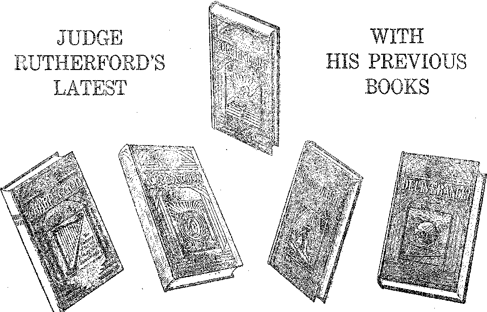

in this issue
GOVERNMENT PROMISED third of a series of radio lectures on good government, by Judge Rutherford.
mmmmmiiimmmmiiimimmmmmigmimimmin:
EVERY OTHER WEDNESDAY 5c a copy - $1.00 a year - Canada & Foreign $ 1.50
Contents
........ ~ Labor and Economics Facts of American Prosperity ................................................ ....557
Japan Abolishes CHiild Night Work
Follies of Our Civilization .....
Social and Educational
What Is the Future of the Daily Press?
Finance—Commerce—Transportation
Hartford-Windsor Electric Bills
Political—Domestic and Foreign .
Reserve Officers’ Training Coups
Sunday in Atlanta ___________________;..............:....... 557
Raiford Penitentiary .......... 559
Agriculture and. Husbandry Effect of Ultra-violet Rays on Beks ............
' Science and Invention Radio Ear in Operation
Locating Loudspeakers ________________________________________________________________________________.....557
Home and Health New York City’s Department of Health .....
The Grape Cure ............... .....56o
Sundry Experiences with Aluminum. ___________________________________________.■________
Travel and Miscellany
Notice ............ ...556
Balboa’s Unholy Mosquitoes ____________________________________________________________________
Religion and Philosophy Got What They Went After ____________
Mrs. Eddy Dii> Not Copy Verbatim ___________________........______________________________
Government Promised 567 Abbott’s Vow of Poverty ................ ...574
The Children’s Own Kadio Story"
Published every other Wednesday at 117 Adams Street, Brooklyn, N. Y., U. S. A., by WOODWORTH. KNORR & MARTIN
Copartners and Proprietors Address: in Adams street, Brooklyn, A’. Y-, U. S. A.
CLAYTON J. WOODWORTH .. Editor ROBERT ,T. MARTIN.. Business Manager NATHAN II. KNORR .. Secretary and Treasurer
Five Cents a Copy—$1.00 a Yeah Make Remittances to TUB GOLDEN AGE Notice to Bnoscribers: We do not, as a rule, send an acknowledgment of a renewal or a new subscription. A renewal blank (<•arryiug notice of expiration) is sent with the journal one month before the subscription expires. Change of address, when requested, may be expected to appear on address label within one month.
Foreign Offices
British . . „ , „ , , , a „ , . . 34 Craven Terrace, Bondon, W. 2, Bngland Canadian- . . . ,.......40 Irwin Avenue, Toronto 5, Ontario, Canada
A.vstralasian- » „ 7 Beresford Bd., Strathfield, Sydney, N. S. W., Australia ttou-th Africa .......... . . 6 Belie Street, Cape Town, South Africa
.Entered as second-class matter at Brooklyn, N. Y., under the Act of March 3, 1879.
Volume X Brooklyn, N. Y.» Wednesday, May 29, 1929 Number 253
SUPPOSE yon were the editor of a magazine, always on the lookout for interesting matter for its columns, and you had enough copy on hand to make up several numbers. Then suppose that suddenly, in midwinter, the president of the Watch Tower Bible and Tract Society should say to you, “How would you like to take a little trip through the southern states, including a visit to the Bahamas! One of our speakers, advertised for this route, is needed in other parts, and if you so desire you may go in his place.” What answer would you make?
The answer wmuld be some such answer as might come from a hungry boy or girl confronted with a dish of berries and cream, or a famished man suddenly asked to pass upon a porterhouse steak done to a turn. It would not take long to get things fixed up, would it?
And so it came about that February 1 found the editor in Louisville, taking up a route through the southern states and including conventions at New Orleans, Jacksonville, Miami and Tampa, with a canvassing trip to the Bahamas in prospect. And there was canvassing all the way along, too.
The classes of Bible Students visited were all in splendid condition, all rejoicing in the light of present truth and present truths, and all participating in the service work which every faithful worker in the ranks knows from experience is now so richly blessed of the Lord. They did not need to be preached at. The preaching business, except from door to door, has largely had its day.
The zeal of one of the classes visited, a Roman Catholic center, with a difficult style of architecture to contend with, was an inspiration. So, too, was the wit of one of its members of wealth and culture. When her children were unable to appreciate her work in canvassing for Judge Rutherford’s books among the lowly negroes and others, she informed them that that was her concern and not theirs.
And when they objected somewhat to certain of the poor in spirit who were also poor in purse being made welcome in her mansion, she comforted them by saying, “There are eleven rooms in this house; if you do not wish to mingle with my guests in the rooms where I entertain them, there are ten other rooms in which you may make yourselves at home.” The lady has auburn hair. Her husband smilingly refers to her as his tiger, and apparently thinks that everything she does is just right, as all good husbands should.
The trip as far as Miami held seventeen days, with some canvassing every day, 328 calls in all, and 242 bound books. It held the unique blessing of the revival of a Watch Tower and a Golden Age subscription, and a sale of Judge Rutherford’s books, to one who had halted for a time by the wayside but is now resolved afresh to light the good fight of faith to its happy end.
It held, too, the extraordinary experience, at Waynesboro, Miss., of conducting the funeral of a beautiful young woman who had been murdered only the day before. Her husband had come on suddenly from a distant state, and when she declined to return with him he said, “We may as well end it all,” and shot and killed his wife and himself before those about could intervene.
Only an hour before she was slain, Judge Heidelberg’s daughter, friendly to the cause for which we stand, had gone down town for the express purpose of giving a small sum of money to a poor old blind negro for whom she had sympathy. How happy she will yet be, and' the old negro and her husband too, we hope.
All Aboard for Nassau
At length Miami was reached; its convention was over and gone; and the next appointment on the list was the canvassing appointment in the Bahamas. A Miami Bible Student defrayed the expense of a longer visit and a more extended itinerary than had been originally contemplated, so two weeks were allotted to it, instead of three days as originally scheduled.
It was on the night of February 25 that the seventeen-hour sail from Miami to Nassau (180 miles) was negotiated. The North was in one of its greatest snowstorms of the season. The editor slept with not so much as a sheet over him; it was an ideal summer night. In Miami and in the Bahamas the thermometer rarely goes over 80 or under 70, and the nights are always tempered with strong, fresh breezes from the ocean.
The captain of the “Princess Montagu” proved to be an admirer of Judge Rutherford and was glad to get a set of his books, as was a fellow captain seated at the same table. Captain Song-dahl of the “Montagu” has a brother, a railroad man, who is “of this way”. The blessings of the Bahamas had begun, and after that there seemed no end to them.
The Bahama Islands consist of twenty-five inhabited islands, seven hundred islets called cays, and over two thousand rocks and coral reefs. The belt is 160 miles wide, stretching from a point forty miles off the east coast of Florida 800 miles in a southeasterly direction to Turks Island and Inagua off the northern coast of Hayti.
The axis of the Bahamas, running from northwest to southeast, includes the Berry, New Providence (Nassau), Long, and Crooked-Ack-lin groups. To the south of the axial line are the Bimini, Andros, Exuma, Ragged and Inagua groups. To the north of the axial line are the Grand Bahama, Abaco, Harbour, Eleuthera, Cat, Burn, San Salvador (Wailing), Mariguana and Turks Island groups, eighteen in all.
The total area of the islands is 4,396 square miles, equivalent to a single tract sixty-six miles on each side. The largest four islands, 77 percent in point of area, Andros, Abaco, Inagua and Grand Bahama, contain but 26 percent of the population. The total population of the Bahamas is 53,031, one-fourth of European and three-fourths of African descent. The island of New Providence, upon which Nassau is located, contains 12,975 population and has an area of but 58 square miles.
Eric the Red landed on American shores in the year 986; Leif Ericson, in 1000; Skolno (Polish), in-1450; and Joao Vaz Corta-Real and Alvaro Martins Homem (Portuguese), in 1464. October 12, 1492, the better known and more widely advertised Spanish Jew, Christopher Columbus, landed on the island of San Salvador, now called Watling-’s Island, in the Baha-man group.
When Columbus and his friends landed in the Bahamas they found them sparsely settled by a simple, peaceful class of fishermen who called themselves Lucayans. So at first the Bahamas were called the Lucayans. The name Bahama came from a town of that name in Cuba. Columbus and his comrades carried off the original settlers and worked them to death in the pearl fisheries of Panama. There is reason to believe that the Spanish and French Basque fishermen came to the banks of Newfoundland for cod centuries before any of these events occurred.
The next settlers of the Bahamas were a band of sixty Puritans, banished from Bermuda in 1647 by the Royalists. Their ship was wrecked on the island of their choice, Eleuthera, but they were left without supplies of any kind. Their leader, Captain Sayles, negotiated the long and difficult passage to Virginia, in an open boat, and brought much needed aid. Word traveled on to Massachusetts, and the brave but poor colonists of the far North sent aid to their destitute brethren. Among the names of the honored sixty are those of Bethell, Carey, Knowles, Pinder, Sands and Sawyer, and their names are common in the Bahamas to this day.
These settlers provided in their original agreement that all persons of justice and sobriety willing to live peaceably and quietly would be accepted “'as members of the republic”, and that, too, “notwithstanding any differences of judgment.”
These men taught their boys to fear God but not to fear hard work. Every boy was expected to be able to sail a boat in a gale, and to be generally dependable. The girls were equally competent. Every Bahaman can swim and can sail a boat.
In 1670 King Charles II seized the Bahamas and divided them among six court favorites, Albemarle, Ashly, Berkeley, Craven, Carteret and two others. Under their miserable misrule the islands got their bad name of being the rendezvous of pirates, and the pirates were there in plenty.
Nassau became the pirate center. Among those who caused others to “walk the plank” were Bellamy, Brown, Burgess, Conklyn, England, Fife, Hornigold, Jennings, Johnson, La Bouche, Martel, Penner, Sample, Teach, Vane, Williams and Winter. Jennings was considered the social leader of the group. There is vanity even among pirates.
Teach, excessively vain, vulgar and cruel, was not admitted to the society of the Jennings group. From his habit of braiding his coal black hair and whiskers, Teach (Blackbeard) became one of the most famous of pirates. He died in single combat, sword in hand, on the deck of his own vessel. His tower is still to be seen in Nassau.
The pirate era was not of long duration. In 1718 a regular administration was set up, the pirates surrendered, and a general amnesty was proclaimed. In 1787 the heirs of the seven court favorites above mentioned were each given two thousand pounds for their interests in the Bahamas. This reward was, to all intents and purposes, a theft from the British Treasury, and such thefts still go on. The Bahamas would be far better off today if they had never seen or heard of these gentlemen adventurers.
The Bahama Islands lend themselves peculiarly to such work as the piracies of 1700, the blockade running of the Civil War, and the present illicit rum traffic. They are so close to American shores, and their waters are so intricate and difficult to navigate that pursuit is risky. During the Civil War, Nassau was a recognized center for blockade runners.
The Bahamas do not boast of their natural resources. They have something else. They boast the clearest, cleanest air in the world, and the whitest, brightest sunshine. And they also boast a winter climate that is perfection itself. It is just right, not cold, not hot, providing perfect comfort in the lightest of clothing. The lowest temperature ever recorded was 51.5 degrees on January 26, 1905.
But the special thing of which the Bahamas boast is that they have the most beautiful seas in all the world. The beaches of pink and white coral sand- are joys to behold. The waters teem with fish of all sizes and varieties. The shells are the most beautiful to be found.
The color of the bottom has been seen at 360 feet and is easily apparent at fifty feet. In the sunlight the water changes from palest jade to emerald green or deepest sapphire. Every cloud and every breeze brings new colors of green and blue, and sometimes pink and orange, merging into the old. Those who have seen the sunlight on Lake Louise, in the Canadian Rockies, can appreciate the picture. But travelers admit that there are no oceans elsewhere in the world so gorgeous as those of the Baharhas.
Though not the most widely advertised, the Bahamas also boast the finest submarine gardens in the world. Oddly enough, these gardens are almost in Nassau’s front yard, easily reached in a few moments by glass-bottomed motor boats. The plants waving around in the water, with all kinds of queer fishes swimming among them, make a picture never to be forgotten.
Many other places boast of their bathing beaches. The Bahamas have' many as fine as are to be found anywhere, and the temperature of the water is always just right for bathing. As there is always a breeze, blowing the salt air about, the appetite is kept sharp. It is hard to keep the salt crystals off one’s glasses: the salt can be tasted on one’s lips and can even be seen.
Yachtsmen claim that there is nowhere in the world where there is sportier sailing than in the Bahamas. For one thing, the waters, with their thousands of coral reefs interspersed, are probably the most dangerous; and to take the danger out of yachting is to take the fun out of it. Another thing is the sudden, freakish winds which come from nowhere and disappear as quickly as they arise.
The Bahamas do not boast of their hurricanes, but they have them. Indeed they seem to be a kind of hurricane nursery. About once in fifteen years there is a destructive storm that levels or tosses about everything that is not well built.
In the great hurricane of Sunday, July 25, 1926, scores of steamers, pleasure yachts and sponging schooners were hurled ashore or driven out to sea, with the loss of all on board. It is known that on that day more than 150 were drowned on the sponge grounds off Andros Island, and 400 were missing. These grounds are 150 miles of unsheltered sea from Nassau.
The Truth in the Bahamas ‘ .
The Lord always has His witnesses, in every place where there are any of those who are His, and He has raised up some in the Bahamas; not many, to be sure, but in Nassau there are one white brother and his wife (formerly of the Toronto class of Bible Students), two colored brothers and three colored sisters.
These friends thought conditions in Nassau would be difficult for a white canvasser from the States. He would have to pay $5 a night for his bed, and the meals would be “worst”, i. e., proportionately more expensive. The tourist folders advertise luncheon in some of the hotels at $3.00, with dinner $3.50.
But the canvasser, on landing in the Bahamas, obtained a pleasant room in a nice house on the outskirts of town for an entire week for one pound, and his lunch the first day cost him a shilling and sixpence, 36c. When Christians travel they need to use their heads.
The next step was to obtain a large-sized map of the Bahamas and locate the eighty-five post offices and put down their names and populations upon it; also to mark upon it the routes of the mail steamers which visit these post offices once in two weeks, with the names of the vessels and the nearest dates of sailings.
After making full arrangements to provide for himself independently, the canvasser looked up all the Bible Students and enjoyed sweet fellowship with each. The white sister was so glad to see a Bible Student from the States that she wept, womanlike, while the canvasser smiled. A tasty dinner was had too.
The first boat out was the “Priscilla”, due to leave for the island of Abaco the next night, Wednesday, and to be back in Nassau six days later, allowing four days for service in Abaco itself. Passage was obtained to Green Turtle Cay, the end of the steamer’s run, and the thrill of a jump into the unknown was at hand. Seventy-two of Judge Rutherford’s books, Deliverance, Creation, Government and Reconciliation, were taken along. No Harps were available at the time.
Great Abaco Island is, next to Andros, the largest island in the Bahamas. A hundred miles long, it is not over ten miles wide at any point; and in one place, “Hole-in-the-wall,” the reef is so narrow that the seas have broken it through. The area, 776 square miles, provides homes for 3,993 people. There are but seven villages of sufficient importance to have post offices, and all told they account for but 2,299 inhabitants. The largest town, Hopetown, has but 511 people. . .
The products of Abaco are sponges, himber, shark skins, sour oranges, cocoanuts, sapodillas, sisal and fish. The lumber goes to Cuba. The shark skins go to Baltimore, where they become footwear for men who are willing to pay high prices for leather which, extremely soft and pliable, is also very tough. The sour oranges are as sour as lemons, but are eaten with a relish. The sapodilla is a delightful fruit, about the size and appearance of a russet apple, with a distinctive flavor of its own. The sisal goes to Britain, for the making of ropes.
The natives of Abaco are mostly whites, descendants of the Puritans that first came to the Bahamas as exiles from Bermuda, in 1647. They are the finest type of quiet, peaceable, sea-faring and God-fearing mon. Always face to face with death among the reefs and in the hurricanes, their general subject of conversation is God's Word and their hopes of a future life. It was an inspiration to be in their midst,
The Trip Northward .
The “Priscilla” was at one time the “Champion”, and as such was a successful contender in the international yacht races with one of the Shamrocks built by Sir Thomas Lipton. It is 100 feet long, 22 feet wide, and is built for speed, not for stability. It has the well-earned reputation of rolling very badly in a heavy sea. The centerboard lias been taken out, and a Diesel engine installed.
Half an hour out of Nassau, and in a very heavy sea, the discovery was made that the rudder box had split and a nice stream of water was leaking into the hold, which latter was laden with concrete. The pumps kept the water down, and so long as it did not get into the books in the stateroom, all well and good.
During the night the seas got rougher and rougher. The “Priscilla” tried all stunts known, standing first on one end and then on the other, riding around one wave lying on one side and then keeling clear over on the other until the canvasser could see the stars almost overhead without getting out of his berth. Some water came into the stateroom, but not much, and no damage was done. The night was so rough that the freight and passengers for Cherokee Sound had to be carried by, with the expectation of putting them off on the return trip. In the morning the captain said he slept only fifteen minutes during the night. One and one are two. That makes two of us.
In the lower berth was a minister’ of the Church of England, boasting that he w7as going to a certain place to strip the rectory of most of its furnishings, to use them in his new appointment. He thought it a good joke. So did the canvasser, for a different reason. It seemed likely that if the ship went down into Hades, the dominie, on account of having the lower berth, would get there first, and that seemed every way proper.
In the morning the ship had completed her run of eighty-five miles in the open ocean and ran over the bar into Great Abaco Sound for the remainder of the journey. However, there is a second bar inside the first one, and the “Priscilla” ran upon it and settled down for a rest. After three hours the tide lifted her off and away we went.
The next excitement came a few hours later. The quadrant of the steering mechanism developed a flaw and broke in two. Thereafter- it was necessary to steer with a makeshift arrangement of ropes and pulleys wonderful to behold; but it worked, and we finally came to anchor at Green Turtle Cay about 9: 30 p.m., Thursday.
Finding that there was one point, Norman Castle, twelve miles farther on, the canvasser asked the captain how to get there and was told that the mail would leave at five o’clock the next morning. He asked to be called at 4:30, carefully wrapped twenty-four bound books in two packages, and in the morning set off for his first ride in a sailboat, some four or five miles across the sound to what is called “The Road”.
Conversation with the ferryman revealed that a nephew and an aunt are members of the class of Bible Students at Key West, and that when The Harp first came out he had taken a little woman, another “canvasser”, on the same trip and helped her ashore pickaback, the same as he does all his passengers. He had scores of questions. What a wonderful opportunity of service!
“The Road.” You have visions of a nice little village at the end of a concrete highway. But your visions are wrong. “The Road” is the end of a seven-mile footpath through the woods, just wide enough for a human being to walk in.
After three miles through the woods “The Road” merges into a narrow-gage railroad, a log road for the mills four miles farther on. A handcar is provided for the mail carrier. He and his son have brought seven great sacks of mail from the boat, while the canvasser carried his little cargo of twenty-four books! He has the reputation of being the strongest man in the Bahamas.
The idea of the handcar is that you put your burdens upon it, shove it up to the top of a hill, then hop on and ride down, then get off and shove some more and ride some more, and so on ad infinitum, One mile of this was enough for the canvasser and he strode off down the track through the rain, leaving the handcar to follow as best it might. •
Arrived at the post office, the postmaster and the constable each decided to take a set of Judge Rutherford’s books, the lady next door took a set, and one more canvass on the front porch of the post office disposed of the three remaining sets, so that the twenty-four bound books lasted all told just seven minutes! This was the hand of the Lord.
The canvasser sent back to the boat for his remaining forty-eight bound books, and they arrived at five o’clock. Meantime the commissioner of the district had invited him to spend tire night and to address the people of the town, assuring him that they would all be out to hear. The population of the tow-n is set down at 370, and it is estimated that more than half were out to hear a discussion of the question, “Is Everlasting Life on Earth Possible?”
That night, in the home of the manager of the plant (a lumber plant), after a conference lasting till late, the commissioner and the manager, and their wives, and the canvasser, all agreed that this is the truth; and so it is, and therefore the most precious thing in all the world. The truth has been reaching them over the radio, and they were not unfamiliar with Judge Rutherford's message, and not unprepared for it.
The manager said, "Tonight you are staying with my friend the commissioner; tomorrow night you are going to stay with me. In the morning I will have my son go around writh you and call at homes -where they should have these books. If anybody would like to have them and does not have the money, I will pay for them myself.” With this kind of a start, two hours in the morning sufficed to dispose of all the remaining books, and here vras the canvasser 120 miles away from Nassau without a book left! Does not this show the interest of our Lord and Head in the placing of this message in the hands of the people ?
There was another meeting Saturday night, subject, “This Gospel of the Kingdom,” and then an early start Sunday morning back to the boat. Five young men went along. Ordinarily, on arrival at “’The Road” it is necessary to build a fire of rotten wood so that the smoke may summon the ferryman from his home five miles across the sound. But one of the young men goes to see his sweetheart every Sunday, so the ferryman was there to meet us.
Wish you could see what fine young men these are. When the canvasser said a few kind words about the effects of tobacco upon the heart, lungs and blood, causing premature baldness, wrinkles, lassitude and loss of memory, three of them who were smoking cigarettes dropped their unfinished “coffin nails” into the water without a word of resentment or protest. Try that at home and see what you get.
A quiet day on the boat, reading and writing, was broken at twilight by the steward’s coming on board and saying, “We heard of your talks at Norman. Castle. We have no time to get a church, but if you are willing to speak in the open square we can guarantee you a good audience.” The canvasser said, “Let's go.” It is a novel experience to stand out in the square of a strange town, open with a hymn, and then start preaching. But an audience of 75 paid close attention to the end.
The return to Nassau was as interesting as the one outbound. The improvised steering apparatus worked all right, but there was another grounding on a sandbar. This time we got off in twenty minutes, despite the gloomy statement of one of the passengers, “Now -we are on for life,” because it chanced to be at high tide.
Arrived at Hopetown, the last port before running out of the sound into the open ocean, the barometer fell so suddenly that the captain said, “If this were in the hurricane season I should be alarmed.” As it was, the “Priscilla” swung at her anchor two full days, not daring to venture out.
The dominie had gone ashore to visit another man in the same business. He boasted that he had been successful in his errand. He had taken the best of the furniture out of the rectory, and besides that had cajoled his suffering parishioners into giving him over five pounds. It had been a profitable trip, speaking financially; and that is the way theologians speak.
The captain thought that while he was gone, and the storm was raging, it would be a good time to hear about the gospel of the Kingdom; so all hands, the crew of ten, and the passenger list of fifteen, assembled in the cabin. The interest was well sustained, and a concluding meeting was held on the boat after it reached Nassau, resulting in the sale of sixty-six books. Several complete sets were sold, and every member of the crew took some of the books. At Nassau the boat went into drydock for repairs.
Those of “this way” were all down at the wharf when the boat came in, two days overdue. Two of them, the white brother and sister, were bubbling over with pleasure. When the canvasser left they had no room wherein to entertain him. Now they had been put in charge of a guest-house, where he could have a room and private bath and would be as one,of the family, and they made him so! How good the Lord, if we but trust Him and go ahead!
In a few hours on Friday and Saturday the canvasser sold the rest of the 170 bound books and 100 booklets that he had brought with him from Miami. These were sold in one and one-half blocks of territory, and the map shows 74-£ yet to do, though many of these blocks have already been worked locally.
On Sunday there was a class drive. In the forenoon Fox Hill, a suburb, was -worked. In the afternoon it wras a drive in the remotest part of the island. The three white workers occupied one seat and the three colored workers the other seat of the one car. The houses were very scattered. When we came to the home of a white family, one of the whites got out and worked it. When we came to a colored family, one of the colored workers made the canvass. Some system, eh, what! And it worked fine. Altogether we sold about fifty books and booklets.
On Sunday night there was another meeting in the public square, an excellent audience of about 250, mostly whites. The next day, although the canvasser no longer had any books to show, this resulted in the sale of ten bound volumes and twelve booklets. Monday night there was a meeting in a colored Baptist Church, Tuesday night in a colored motion picture theatre, with attendances of 30 and 40, respectively. Altogether the trip to the Bahamas was the happiest event of the canvasser's life.
Nature has made the Bahamas to be a playground, a place different from the rest of the world, a place where seas and skies and climate conspire to make a winter paradise. Those who think of them only in terms of the liquor that flows through Nassau miss all the best of it.
And there is plenty of liquor to be seen in Nassau, enough to make one disgusted. Every other store is a liquor store. Of the total imports for the year 1927, amounting to 1,844,932 pounds, 1,094,223 pounds, or 59.3% of the whole were of wines and liquors, Etactically all of this goes to America. Most of it is smuggled, but much of it goes back inside of tourists whose god is beneath their vests.
A favorite trick of Nassau taxi drivers is to get some rich American drunk, cart him off to his hotel and put him to bed, and in the morning charge him $25 or $30 for driving him all night, a charge which he pays without protest.
Means of conveyance in Nassau are about evenly split between the modern Jehu with his gas cart and the old style darkie with his old style surrey. The latter give Nassau its atmosphere of being fifty years behind the times. These chariots are as rickety as the “one-hoss shay” on the day of its collapse, and the fiery steeds which draw them are about the size of small colts, and able to make four or five miles an hour. They are grown on some of the out islands.
Nassauans make a great mistake in trying to keep tourists on New Providence, telling them there is nothing to be seen on the "Out” Islands. Abaco is a paradise, one of many, and its people the finest in the world. Moreover, there are possibilities of development, certainties, in fact.
One after another the Bahamans have tried the cultivation of cotton, pineapples, citrus fruits, sisal, cocoanuts, sponges, tomatoes and various other products. They no more than get well started before a new kind of bug eats up their fruit, or a big hurricane blows it all off, or a new tariff regulation puts an end to the market, but they do get started.
Before the Civil War the Bahamas used to ship a hundred thousand oranges at a time to Charleston and Savannah. In 1927 a half-million dollars’ worth of tomatoes were exported. These are sent to Florida, recrated, and sold in northern markets as Florida fruit, so say Bahamans.
There is no soil in the Bahamas where a plow can be used. It is too thin and light, almost a pure limestone. At present all cultivation is with the humble hoe. What is needed is a steamshovel to turn over the soil to a depth of two or three feet, and a pulverizer to grind it to powder. Then plant it to red clover or cow-peas and turn the crop in, and after that anything could be grown on it that could be grown anywhere.
The Bahamas have many interesting fruits and flowers not seen elsewhere. Have you ever eaten sapodillas, sour-sops, sugar-apples or seagrapes? Some of these you have to learn to like. You should see the ceiba, or silk-cotton tree. It grows to colossal size, with roots as tall as a man in those parts of them which grow above ground. The upper surfaces of its limbs are thickly strewn with thorny cones up to an inch in height, as sharp at the point as the sharpest lead pencil.
Andros, Isle of Mystery
Andros, Bahama’s largest island, is its isle of mystery. Though only one hundred miles long by forty miles wide, it has never been explored; and when you have seen a mangrove swamp you know why. There are wild rumors in Nassau that it has inhabitants that are cannibals and that still hunt with bow and arrow. The negroes fear its interior.
A young woman who visited Andros reported seeing and buying fish from a man whose face was so covered with hair that the color of his skin was not discernible. Very likely there are still on Andros some descendants of the Norsemen who first visited America, or possibly some of the descendants of later explorers. This would account for the men of mystery. Exploration of Andros by airplane is contemplated. There is no harbor on its coast except for small craft. It is the only one of the Bahamas that can boast a running stream.
Like Andros, Cat Island has no permanent white population. The natives of these islands, and of all the Bahamas, are well educated, largely by teachers from Jamaica. Inagua has herds of wild cattle, droves of pigs and donkeys and many wild horses. San Salvador has horses, also.
Customs of the People
On the island of Abaco there are no undertakers. Every adult pays two shillings a year to belong to a burial society. No fee is charged for minors. When a death occurs two members of the burial society take charge of the remains, make all the arrangements for the funeral, and conduct it without one cent of expense to the bereaved family. Who shall say that this is not better than the absurd custom of loading the bereaved with a great expense when they are least able to bear it?
Boys and girls take to the water like ducks. A young married woman pointed to a reef so far out in the ocean that it was hardly visible and said, “Do you see that reef? Many a time I have swum out to that, and long before I got there my mother was no longer able to see me at all. She used to get worried sometimes, but 1 always came back safe and sound.”
In the Bahamas there is no tax on incomes and no tax on vacant lands. Indeed the government has a surplus of five hundred thousand pounds, which it has invested. There is a maximum inheritance tax of 2%. The police of Nassau are all fine-looking colored men, and dressed to kill. Like some of their white confreres they seem to get a vast amount of satisfaction out of their nifty uniforms.
Once a year, from nine o’clock Christmas eve until noon next day, law and order is set aside in Nassau and those who do not wish to get hurt are advised to get off the street and to stay off. This so-called John Canoe night is looked upon with terror by the whites. It is a night when scores are settled and blood flows freely.
The passion of the negro for music, and his capacity for it, are very noticeable in the Bahamas. Whenever two or three of them get together their voices are soon heard in song which is really, melodious, whether the words have any sense to them or not. This is a phenomenon which many tourists to Nassau have noticed with great interest and admiration.
Nassau is on New Providence Island, and that is why the initials N. P. always appear after the name Nassau. Nassau has a good water supply. Eleven lines of wells are connected with each other. Each furnishes a little water; altogether they furnish enough for the uses of the city.
The city has also a good sewer system, designed in England and built by Canadian contractors under the supervision of the Bible Student several times referred to in this article. The system is novel in that it is in sections, the sewage being automatically pumped from one elevation to another and finally pumped under the harbor to an outlet at a distance and in the ocean itself.
In the suburbs, not yet reached with the sewage system, the same firm has been building community latrines, very scientifically constructed. Yeast produces fermentation in the sewage, the fermentation draws flies, the flies breed maggots, the maggots eat the sewage and wind up by eating one another. It is claimed that the results are perfectly pure water, so pure that it may be used as a table water' and has been so used at banquets where the success of the system was being advertised!
The colored part of Nassau has scores of stores where the usual purchase is a penny's worth of bread or butter or sugar or whatever is for sale. Community kitchens (Dutch ovens) are the rule. All housework is done out of doors. Many of the houses are as small as 7x9. A colored man’s house 10x12 would be a castle and. often occupied by two families. No matter how small the house, it has a partition dividing it into two parts.
Nassau has an interesting home for waifs (the little colored boys with no home who used to dive for coins). It has the Queen’s Staircase, a flight of steps seventy feet high, cut in the solid rock; and it has the Gregory Arch, where one street cuts under another one at a lower grade. It has one of the largest sponge exchanges in the world.
New Providence has interesting caves, some of them large enough for a good-sized meeting. The Mermaid’s Pool, so called, is a wicked-looking hole 62 feet 8 inches in diameter, probably the crater of an extinct volcano. It is now filled with water to within about ten feet of the brim. The lava lying all about within a mile or so of the pool suggests its original place in the New Providence scheme of things.
[On the editor’s return he wrote Judge Rutherford a note, suggesting a good way to work the Bahamas with the literature of the Kingdom. The judge thought it would be a good idea to publish the letter in The Golden Aye, as it might inspire somebody to apply for the territory and make the trip; so here it is. But do not apply for the territory unless you intend to work it fully.]
I VENTURE to offer the results of my expe-. rienee and observation in the peculiar problem of working the Bahamas.
There are eighty-five post offices, scattered over twenty-five islands, 800 miles apart. They are reached by eleven mail steamers, running fortnightly. These usually remain three or four days at their last port of call before returning. Suppose eight post offices on each route, a-b-c-d-e-f-g-h. An energetic man could take a mail boat to g, work it, and get somebody to sail him over to h in time to finish that before the mail boat returned. Then he could take the mail boat back to a, work that, and get somebody to sail him over to b and c; and so, by what traveling men call “doubling”, he could get double service out of the mail steamer and probably clean up each mail route in about a month. A good man ought, to get pretty well over the Bahamas in one year by this means, but probably some points would inevitably be neglected.
A much better plan, and one which I talked over with Richard Johnson, with a view to submitting it to you, would be for a small party to hire a gasoline launch, take their lives in their hands, trust their all to the Lord to take care of them, and work the eighty-five post offices one after the other in the following order. I give below the population of the post-office towns, and of the islands, in the order which would, I believe, be least expensive. Certain prominent points which have radio telegraph stations are indicated by an asterisk (*).
|
More’s Island |
195 |
|
Cherokee Sound |
307 |
|
Hopetown* |
511 |
|
Marsh Harbor |
327 |
|
Man-of-war Cay |
100 |
|
Gt. Guana Cay |
100 |
|
Green Turtle Cay |
402 |
|
Cooperstown |
192 |
|
to ELEUTHERA I. |
(7,547) |
|
Harbour Island* |
917 |
|
Spanish Wells* |
582 |
|
The Bluff |
498 |
|
Current Island |
388 |
|
Gregorytown |
282 |
|
Hatchet Bay |
208 |
|
James Cistern |
252 |
|
Governor’s Harbor |
* 637 |
|
Palmetto Point |
484 |
|
Savannah Sound |
432 |
|
Tarpum Bay |
565 |
|
Rock Sound |
505 |
|
Greencastle |
213 |
|
Freetown |
216 |
|
Wemyss Bight |
297 |
|
Millers |
142 |
|
Bannermantown |
219 |
|
to CAT ISLAND |
(3.859) |
|
Orange Creek |
343 |
|
Arthurstown* |
562 |
|
Bluff |
19!) |
|
Zanicle |
100 |
|
Cove |
100 |
|
Knowles |
171 |
|
The Bight |
506 |
|
Old Bight |
540 |
|
Devil’s Point |
249 |
|
Port Howe |
324 |
|
to SAN SALVADOR |
(6SG) |
|
Cockburn town* |
194 |
|
Victoria Hill* |
61 |
|
to RUM KEY |
(275) |
|
Port Nelson* |
146 |
|
Port Boyd |
58 |
|
to CROOKED-ACKLIN | |
|
(3,458) | |
|
Colonel Hill |
211 |
|
Portland Harbor |
100 |
|
Alver Town |
100 |
|
Snug Corner |
257 |
|
Spring Point |
161 |
|
Pompev Bay |
149 |
|
to MARIGUANA |
(?) |
|
Post offices |
? |
|
to CAICOS IS. |
(?) |
|
Post offices |
? |
|
to TURK ISLANDS |
•> |
|
Post offices |
? |
|
to GREAT INAGUA |
(937) |
|
Matliewtown* |
640 |
|
to RAGGED CAYS |
(488) |
|
Duncantown |
306 |
|
to LONG ISLAND |
(4,659) |
|
Clarence Harbor* |
270 |
|
Deadman’s Cay |
719 |
|
Bight of L. I. |
220 |
|
McKinnons |
110 |
|
Doctors Creek |
64 |
|
O’Neills |
143 |
|
Simms |
99 |
|
Burnt Ground |
171 |
|
to GREAT EXUMA |
I. (3.730) |
|
"Williamstown |
165 |
|
Forbes Hill |
200 |
|
Rolletown |
129 |
|
Georgetown |
349 |
|
Mosstown |
186 |
|
Jit. Thompson |
123 |
|
Forest |
211 |
|
Steventon |
171 |
|
Rolieviile* |
561 |
|
Barraterre Island |
113 |
|
Farmer’s Cay |
104 |
|
Black Point |
194 |
|
to ANDROS I. |
(6,976) |
|
Deep Creek |
269 |
|
Kemps Bay |
272 |
|
Long Ba?r Cays Mangrove Cay |
643 1,150 |
|
Fresh Creek |
269 |
|
Calabash Bay |
180 |
|
Staniard Creek |
585 |
|
Mastic Point |
209 |
|
Nicolstown* |
533 |
|
Red Bay (by sail) 106 to NEW PROVIDENCE | |
|
(12.9751 | |
|
Nassau* |
12,500 |
|
to BERRY ISLANDS (328)’ | |
|
Little Harbor Cay |
77 |
|
Bullocks Harbor |
loCs |
|
to BIMINI ISLANDS (610)' | |
|
North Bimini* to Miami. |
610 |
Maps of the islands (some purchased in Miami, some in Nassau, and some in Washing-
|
Miami to BAHAMA IS- |
Water Cay |
143 | |
|
LAND |
(1.695) |
High Rock |
110 |
|
West End* |
395 |
Sweeting’s Cav |
11’2 |
|
Brandie’s Pt. |
123 |
to ABACO ISLAND |
(3.993) |
|
Pinder’s Point |
118 |
Norman Castle* |
370 |
|
Hunter’s |
121 |
Bluff Point |
190 |
ton) are in the hands of Mr. Richard Johnson, specting this gospel of the Kingdom, and again
I hope that this may lead to the people of I express my appreciation of your kindness in the Bahamas’ getting a first-class witness re- letting me make this investigation.
Reserve Officers’ Training Corps By Hon. Boss A. Collins [From The Congressional Record}
IOAN not give the Congress the number of girls who are given this particular training because their number was not furnished to the committee; but usually pretty girls are chosen as officers and sponsors, and uniforms are provided for them from some source. These girl officers are frequently installed with, much pomp and ceremony and public display; they lead parades and participate in reviews and preside on social occasions, conduct personal inspection of boy cadets in some places, and act as general billboards, advertising the glory of the Reserve Officers’ Training Corps and the military machinery.
The young ladies are not the only agencies used in the Reserve Officers’ Training Corps for the purpose of popularizing military training. Horses also play a large part. There are certain schools that would probably not have a Reserve Officers’ Training Corps unit were it not for the riding horses that are provided for the amusement of these young men. Riding is becoming very popular socially, and most youngmen in schools like to ride, and as long as they are able to ride a good horse, furnished, fed, and equipped in a fine, splendid way by the United States Government, they join the Reserve Officers’ Training Corps—for the purpose of improving their horsemanship. The horse is kept in the Army because of its amusement and social value rather than its probable military usefulness.
The big parade for boy cadets where girl officers turn out to ‘strut their stuff’ is becoming a community event in many places and, of course, the Regular Army is glad to pull off these events, since it gives them opportunities to make speeches on the glories of preparedness and the general stupidity of our country in the past. You should see some of these gala parades and reviews held by our civilian training units—for the edification of those in the ranks and those in the grand stands. . . . These parades and reviews are made so thrilling and attractive by every means possible that the little tots of the community will look forward to the time when they get big enough to participate in yet bigger and showier parades.
We are carrying on a very elaborate program in training our men and women for military duty, and we are spending a great deal of money in popularizing the military idea. . . . Of course, it must be admitted that many of these citizens’ military trainees are encouraged to be in these units by Regular Army management for propaganda purposes only. They are given sugar-coated training because they will become boosters of the war-game idea.
Many of these are having a most delightful experience and are most happy to be part of this great army. They will attract others to desire the same experience. We may expect down through the years to see the demands made upon this Congress grow until our Military Establishment reaches further and further into the life of our people.
Their political influence and power, too, will grow with their ever-increasing numbers and their wishes will co more and more respected by public officials generally and especially those of us in Congress.
THE Society has a limited number of phonograph records of Pastor Russell’s discourses, some of which are on seven-inch, some on ten-inch, and some on twelve-inch records. Thinking that some of the friends throughout the country would like to have them as souvenirs, the Society will dispose of them at the nominal sum of ten cents each to cover the transportation.
IN THE sizable city of Mound Bayou, Mississippi, there is not and never has been even one white resident. In this city, inhabited only by negroes, there has not been a prisoner in the city jail for two years, and it has just been razed to make room for an office building, as it is concluded that the jail is not needed.
FOR a long time nine cents a day has been the allowance for food for Indian children at the Rice school on San Carlos reservation, and this in the richest country in the w’orld. Indian girls eleven and twelve years old have been beaten with sticks and have been chained to their beds.
T N THE Wt fifty years the wealth of the
United States has increased sevenfold. In the last ten years the people of the United States have bought over eight million vacuum •cleaners, five million electric washing machines, a million and a half electric refrigerators, and thirteen million wireless sets.
IN THE state of Massachusetts there are
71,000 policies of life insurance in force that were sold over the counter in savings banks, with no agents’ premiums to pay and no demands for dividends. These policies are 26 percent cheaper than ordinary life policies sold by private companies.
ACCORDING to Senator Nye, 30 percent of American families keep boarders or lodgers, 75 percent of the homes are mortgaged, and in one of our largest cities one person out of every twelve is buried in a pauper’s grave or turned over to medical fraternities for dissection; yet to look at the reports of the New York Stock Market one would suppose that all Americans are on a fair way to become millionaires. Most people never stop to think that all the money that is “made” in the stock market is actually “earned” somewhere else. The man who earns it is not the man who makes it.
THE claim is made that the acoustic properties of the room in which a loudspeaker is located may have much to do with radio reception. Try moving the loudspeaker about until you have found the best place. In many instances it is found advantageous to place the loudspeaker in a corner.
rPHE radio ear, tested out in a school for the deaf at Canton, Ohio, enabled twenty children to hear their own voices and other voices for the first time in their lives. Within half an hour several of the children were able to speak simple wmrds, the first intelligible sounds they had ever uttered. '
THE beating of the bongo drum, a rough-hewn hollow log, with its ends covered with specially treated skins, produces such weird effects, causing natives to lose their balance, that the Cuban government has prohibited its use. The bongo is used in Africa for sending messages by wireless.
WHEN the spring floods in the Danube forced two thousand families out of their homes in the worst flood in over fifty years, the sufferings of the fugitives were increased by attacks from scores of outcast dogs that invaded the villages and in some instances even attacked the fugitives themselves.
IN OBEDIENCE to the cries of a class of people who have nothing useful to do for their fellow men on any day in the week, and who misunderstand the spirit of a command that was made to the Jews only, and never made to any Gentile, the city of Atlanta now says to all its working people, most of whom must, necessarily work all day six days in the week, that hereafter they must not use on Sunday any of the municipal golf courses, tennis courts, swimming pools or other of the recreational facilities of the city for the purposes for which they; were created.
AVING arrived at the age of fifty, and having made a comfortable fortune in the millinery business, Herman Freed, of Brooklyn, N. Y., distinguished himself by turning over his entire business, with all its stocks and furnishings to his staff of employes, and giving them a start for the future by paying their rent a month in advance.
ON AND after July 1, 1929, night work for women and children will be prohibited by imperial edict. This leaves the United States, China and India, the only countries in the world where all-night labor of women and children in textile mills is tolerated. The United States is the richest country in the world; China and India, the poorest two.
NEW York eats four million dollars’ worth of food daily. In a week it eats a trainload, with the train ninety miles long and containing ten thousand cars. The daily milk consumption is three million quarts, and six million eggs are consumed daily. The city eats sixty million pounds of cheese every year. Forty thousand sheep and lambs are eaten every week.
N AUTHORITY on the subject declares that the latest approved sanitary method is to mix ashes and garbage, because the moisture in the garbage absorbs the lye and potash in the ashes, rendering the garbage dustless and odorless. Thus we learn to do something and then afterward have to learn it all over another way.
IN THE year 1926 electric current users in the city of Windsor, Ontario, paid fourteen cents for the same amount of current for which Hartford users paid one dollar. Since then the Hartford rates have been reduced so that Hartford rates are only three times as high as in Windsor. Moreover, something has so affected the consciences of the Hartford Electric Light Company that in a recent burst of generosity they returned to each customer sixty percent of the bill for a single month’s current.
THE Senate investigating committee, which has recently reported that Wm. S. Vare is not entitled to a seat in the United States senate, declared that conditions in Philadelphia are so corrupt that the average chances of a Philadelphia voter to have his vote for United States senator counted was less than one in eight.
HPHE Philadelphia Daily News says: “Today there are murmurs to be heard in every barber shop, on the street cars, in restaurants, on street corners. Wherever men gather together there is a voice of protest, and such voices are multiplying rapidly. Unless the motto is to be: After us the deluge, our pastors and masters will do well to pause.”
A PETERSBURG- (Virginia) paper makes the surprising declaration that in that state last year one Virginian in every sixty of the population went to jail or prison, the total for the state being 40,290. This was nearly double the number imprisoned in the same state ten years before. Increase in liquor violations was responsible for 14,580 of the jail sentences.
ROM the Manchester Guardian we learn that the mother of the king of Spain wrote to the insurgent leader Sanchez Guerra, then resident in Paris, “Come immediately to save us and the country. My son and myself and all Spain are gagged and bound.” The king’s mother has since passed away, but the dictatorship still remains.
THE American Federation of Labor says very A- truthfully that “in many respects the semiskilled or the skilled worker is more valuable at middle age than at any other period of his life. What may be lost in muscular resiliency is more than made up by knowledge and skill. Scientifically trained minds who have done so much to eliminate waste in industry can not escape their responsibility if they fail to call attention to the greatest waste of all—elimination of middle-aged workers”.
ECAUSE they could not explain satisfactorily how they managed to make so many thousands of dollars in so short a time, Philadelphia suspended in one week eighty-five patrolmen, one captain and one former captain. Most of the men suspended were also guilty of perjury, and perjury does not look well in an officer of the Jaw. It is bad enough when the perjurer is a millionaire.
HE Fascist election in Italy, following the accord between Mussolini and the Vatican, was a complete triumph for Mussolini and the pope. It was noted that great numbers of priests exercised their right to vote, including the cardinals, bishops and archbishops. Under the neiy arrangement all education in Italy is put in the hands of the pope, it is a crime to criticize him, and no marriage is legal unless performed by a priest.
S EVERYBODY knows, the pope and his friends are putting up a losing battle
against short skirts. At Buchau, Czechoslovakia, the priest tried to carry out the program by saying that a spirit had appeared to him and explained that an untimely cold wave was caused by the wearing of so many short skirts in the congregation. Thereupon, of course, some of the men of the congregation attacked four girls as they came out. because their skirts were too short, and thus you see how easily the great cause of religion is upheld and established.
Rockefeller Gets Rid of Stewart
OR lying too much, and for being too conspicuously crooked, the Rockefellers have succeeded in shoving Colonel Robert W. Stewart o ff the end of the plank and he is no longer connected with Standard Oil. The Fresno (Calif.) Bee says: “What will strike the average citizen as most significant in this case is that the punishment of Stewart comes, not through the courts of the country nor its prosecutors, nor any of its officials, but through the Standard Oil Company. What a commentary on our judicial system I A private corporation, itself in the past in no very good odor, accomplishes what the Government of the United States found impossible.”
OR fifteen years a Brooklyn invalid, Jesse Tyler Dingee (now dead at the age of 63), was confined to his home,but during all that time he continued to manage three businesses, keeping in close touch with their every affair over the telephone. By a special arrangement of telephones and mirrors he was able to listen in and take part in directors’ meetings as if present.
^piIE Pittsburgh Post Gazette tells us that a professor of Carnegie Institute has determined that a certain species of hackberries is fifteen million years old. If it be asked how this age could be so accurately determined, the answer of course must be that the date is stamped in indelible ink on each seed. On the other side of each seed are stamped the words, “What fools these mortals be!” The one side is intended to offset the other, with the professor in between.
T T IS claimed that in the Raiford (Fla.) penitentiary a convict who has tuberculosis and is paralyzed on one side has been held in solitary confinement for two years in a concrete cell four by eight built especially for him, and has not been privileged to have a bath in two years. The attention of lovers of the purgatory and eternal torment doctrines is respectfully called to this. The man is slowly going insane. It is claimed that he is in solitary confinement because he knows too much about Florida’s leading politicians.
Follies of Our Civilization
UR civilization wrecked the world in a war to end war, and then gets ready for another one on a still grander scale: it rewards gamblers, dope peddlers and racketeers with millions, and useful men with a meager living; it builds skyscrapers in cities that are already so congested that traffic is almost impossible; it lets statesmen give away hundreds of millions of dollars’ worth of public properties, and honors millionaire oil thieves with the highest gifts at its command; and it teaches in one breath that God is love and yet that he has the most diabolical disposition of which the mind of man could conceive.
OUR source of information on affairs generally or particularly, our nfews channel today is, and for many years past has been, the daily press.
Men glean information of the world in general and of business matters in particular from the daily news sheets; while women find that joy peculiar to their sex in delving into the agony columns and the ladies’ fashion plates, to say nothing of the advertisements which are so often the cause of the husband’s empty purse.
We scurry from our offices, at the close of business hours, out into the street, and we bombard the news vendor with pennies for which we receive a bundle of news; whether reliable or not, is a question which we often leave in abeyance. We scan the morning columns over the breakfast cup. We always seek to be enlightened on one subject or another.
What would we do without the daily press ?
From it we get our sporting notes, market fluctuations, Parliament doings, news from the Arctic explorers, from the Atlantic flyers, and often a good blood-stirring yarn from the pen of some imaginative journalist who has penetrated the barrier surrounding some murder or divorce case. We get, too, the latest efforts of the would-be short story writer.
We never know what to expect from the pens of these journalistic ferrets, the vast army of which seem to have their outposts scattered from pole to pole, in every land and in every area.
No doubt the press is wonderful. But, will it last ? That seems a ridiculous question to put to oneself. But is it so ridiculous? Let us imagine ourselves as we may be in the year 1978.
We see ourselves then in a world far advanced on the lines upon which we are started now. We notice that Wireless’ has advanced to the stage where the best equipment is within the means of every purse, and so simple is the instrument in its construction that even a child can manipulate it, and all defects of reception have been overcome. It is as easy to hear and see a man ten thousand miles away as it is to hear and see him in the room.
“Big Business” has no longer the power to license too heavily, and broadcasting stations are numerous, owing to public demand. News flies over the ether hourly. The household and office loudspeaker is almost continually bawling news items at us; first-hand news at that, unchecked by the monarch of the blue pencil—• The Editor—whose hand is often guided by political influence which prevents him from giving to the man in the street the exact facts unpolished.
With the big multiple broadcasting stations placing on the ether information of all kinds in the shortest imaginable space of time, we are listening to the world’s most important matters as they are emitted from their very source. And we have no need to wait for the press to give it to us second-hand, or, as is more often the case, third, fourth, or fifth-hand. Will we buy the newspaper then? That is the question.
Out in the street we may hear the widemouthed youth screeching “Hawkie-c-loit-Haw-kie”, but we wonder what language that is. It is forgotten by us now.
Yes, there are those today who, even if they do receive a little news over the ether or otherwise, still like to see it in cold print and read it in the clever coloring of the pressman. But this type of man is gradually dropping out, and the man who thinks for himself and analyzes news items with his own mental equipment is more in evidence.
The man of the street today is not influenced so much by press opinions as he was even ten years ago.
Public opinion is now gradually prying itself loose from the; shackles of the pulpit, the press, and the parliament.
The individual is, for the most part, standing on his own feet, and the minority who can not and will not stand unsupported is going to the wall in the present-day rush and high pressure of business. Man must not only think for himself, but think quickly; and to wait for what assistance he might glean from the above three sources might often be disastrous.
So it seems now not so much a question of “Will the wireless displace the press'?” as “How long will it take to complete the task?” We wonder!
A NYBODY who believes that it does the least good in America to expose an infamy ought to immediately apply to some home for the feeble-minded for a permanent room, southern exposure. ..
As recently explained in these columns, all the various public service thieves are now making a concerted raid on the pockets of the people, under the guise of what are variously termed “service charges” or, more latterly, “house and room taxes.”
The idea is all one and the same. It ostentatiously announces a cut in its rates. Then it makes a flat charge to the small user, a “ready to serve” charge, which increases the already back-breaking burdens of the wage-earner, but does make it possible for the large user to get his current or gas or water at less than he previously paid.
The gist of this matter is that it is a concerted plan to rob the poor for the benefit of those who already have more than their share of the good things of life. And the Power Trust is now in the forefront of the battle, doing the dirty work for which it is now so justly infamous.
A friend in. Alabama reminds us that a few months back we mentioned how one of the gifted professors of the University of Alabama went around giving brilliant addresses before Kiwanis, Rotary, and other civic bodies. He was always introduced as director of the university work, but it transpired that he was a propagandist of the Power Trust and received from them $1,000 a month for helping them to do their dirty work.
How efficient this work has been in Alabama is now proven by a movement on foot in Montgomery, the capital of Alabama, to actually give up the use of electricity and go back to candles and oil rather than pay the new “house and room taxes”, the service charges now being levied there.
Our Alabama informant, Wm, H. Frantz, pioneer colporteur, in his letter covering the above-named disclosures, says:
I read with interest the enclosed clipping from The Golden Age of November 28 and wondered just where the Power Trust of Alabama obtained the money with which to pay such fabulous sums for the services of university professors, and here comes the answer in the Alabama Journal under date of Januarj7 2, 1929.
‘'Public Service” Commissions being empowered to “authorize” the Power Trusts to impose “house and room taxes” in addition to the exorbitant rates charged in many localities leads us to wonder just what power these giants have arrogated unto themselves.
They claim to exercise such power and authority “lawfully”; 'which reminds us that the Master said to them in His day: “Woe unto you also, ye lawyers! for ye lade men -with burdens grievous to be borne, and ye yourselves touch not the burdens "with one of your fingers.”—Luke 11: 46.
Perhaps some of our Catholic or Protestant preachers can explain away such methods of oppression and make the victims like itp.But what will the masses do when a tax is imposed by these giants upon the air we breathe and the sunlight we enjoy at the gracious hand of the great Creator?
Balboa’s Unholy Mosquitoes
JT SEEMS that the mosquitoes of the Canal
Zone are very poorly educated. At Balboa some of them thoughtlessly laid their eggs in the holy water font of the cathedral. This ivas a great sin, but the mosquitoes did not know it.
The worst of it was that the holy water all at once turned wicked and hatched out a regular flock of bad mosquitoes, many of which would weigh a pound. (Subscribers are urged to read this last sentence several times before accusing us of fibbing.)
At the last, the Canal Zone authorities swooped doAvn on the archbishop and fined him $50 for violating the mosquito regulations, and
561
served notice upon him that unless he could bless the holy water in such a way that it would produce holy mosquitoes instead of the unholy kind, they would have to close up the old castle for keeps.
If outrages like this keep on, the poor old archbishop may have to get him an alarm clock and a suit of overalls and get to work just like a regular man. This world is full of sorrows. A man no sooner gets educated in a scheme of making a living without working before somebody comes along and turns his scheme wrong side out and hangs its hide on the fence to the derision of the scoffers.
ON A letter-head of good Berwick linen ledger paper, probably paid for by the taxpayers of the city of New York, lies before us a printed letter signed “S. W. Wynne, M. D., Commissioner”, and evidently intended to be sent out to every mother reporting the addition of a youngster to her family.
At the top of the letter-head appear the words, “City of New’ York, Department of Health, Office of the Commissioner.” In the upper right hand corner appear the hieroglyphics 25-3248-28-I.S., confirming the suspicion that the city taxpayers not only paid for the letterhead, but for sending it out as well. The letter says, in part:
“Among the various children’s diseases there are two which you can easily prevent, diphtheria and smallpox. When your baby is. nine months old you should have the doctor protect it against diphtheria by giving it toxin-antitoxin. This is a simple and harmless treatment and will probably keep your baby from ever getting diphtheria. A little later at the end of the year the little one should also be vaccinated against smallpox. If you have other young children who have not yet been protected against these diseases take them to your doctor and have the matter attended to at once.”
The foregoing was sent to us by one of New York’s dental surgeons, who said in his note of enclosure, “'Could you write some comment on this? It is a horrible crime to let these medical doctors impose and advertise their poisons with public money. Children are getting meningitis and infantile paralysis from these supposedly harmless injections. Vaccination is a humbug. It does not protect.”
THE relative value of light as conducive to perfect life on the earth is recorded in the story of creation. In bright sunlight there are seven fundamental rays visible under certain conditions, especially after a shower, as seen in a rainbow. “Ultra” means beyond, so ultra-violet is beyond the violet, invisible. Ultra-violet rays are not new, but their effect is not generally understood. Physicians recognize the value of ultra-violet rays in their practice. Poultrymen and dairymen are resorting to their use.
Now comes Clifford E. Muth, Cincinnati, Ohio, and confirms from practical knowledge that colonies of bees containing an ultra-violet treated queen will produce twice as much honey as those not so treated. The most remarkable result of his experiment is this: The worker bees, inheriting from the queen a more gentle, quiet and subdued temperament, incline to throw away their “swords”.
“And in that day [of restoration] will I [Jehovah] make a covenant, for them [man] with the beasts of the field, and with the fowls of heaven, and with the creeping things of the ground: and I will break the bow and the sword, and the battle out of the earth, and will make them to lie down safelv.”(IIos. 2:18) “A little child shall lead them.”—Isa. 11: 5-9. '
Got What They Went After
A SUBSCRIBER is a little sore because the Federal Council of Churches started on him in October, trying to get ten dollars out of him. There were three letters from Cadman, the retiring president, dated respectively October 6, November 15 and December 8. Then there was one from the treasurer, dated December 19, and two from the secretary, dated December 28 and January 30. In a general way they got what they went after.
The subscriber should not be sore because they tried to get his ten. They missed his, to be sure, but it cost them only 12c to make a try for it, at least only 12c in postage, and the subscriber may rest assured the whole series of letters was well thought out in advance by some publicity man who has about as much interest in. the Federal Council of Churches as the average church member has in heaven. The main thing with him was how to get the ten. The whole scheme makes you think of the Bible Students —because it is so different.
The Grape Cure
SINCE there are so many letters coming in from readers of The Golden Age, asking about the “Grape Cure”, I take it as an indication that we might be able to help some of the sufferers by offering them “The technique of the grape cure”. I therefore submit to you the following suggestions for your publication, or for disposition in any way you may choose.
“The Celebrated Grape Cure” discussed by me in the December 26 issue of The Golden Age should, for the best results, be taken under the direction of a physician who thoroughly understands the treatment, the action and reaction of the grape upon the human system. Surely no one should start this diet who is not determined to continue it to the finish.
To “try the grape cure as an experiment” is worse than useless: it is apt to make matters worse if just trifled with.
I will preface the treatment with a few “DON’TS”:
DON’T use bottled grape juice; I do not know of any that will meet the requirements.
DON’T use ANY other food while on the “Grape Cure” diet; you will only cause yourself (and perhaps others) trouble by so doing. DON’T do it.
DON’T permit your system to become constipated while on the “Grape Cure” diet; use the enema. This constipation is caused by conditions in the system which can in time be overcome.
DON’T start eating the grapes when the system is reeking with noxious, pernicious elements ; fast for two or three days before starting the “Grape Cure” diet.
DON’T let any one frighten you by telling you that you will die if you stop eating for a day or two; Moses (the Israelite) fasted for forty days. So did our Lord Jesus. Others have fasted for as long as fifty-six days with dandy results.
Secure the services of a level-headed physician (one who has been devoted to the study of health and not to the study of disease germs) and let him direct you in the work as follows: In case of internal cancer or cancer that has not become active, it has been found very effective (after the short fast according to the physician’s direction) to begin taking a small amount of grapes every two hours or so throughout the
By Dr, Rollin Jones (Colporteur)
day, not using over two pounds a day for the first day or two, gradually increasing the quantity for a week up to not over four pounds a day. Continue the diet as long as the case requires, or until the patient grows too weak. Many continue without breaking away from the diet for six weeks or longer.
The physician in charge should be One who has had experience with the “Grape Cure”, one who will not administer drugs to the patient. A patient on a “Grape Cure” should not drink drugs, but an abundance of good pure water (Usually two to three quarts daily).
When breaking away from the “Grape Cure” diet, raw vegetable salads may be used (in small quantity), gradually increasing the meal of such foods as lettuce and grated carrots and diced celery, or raw figs, raw onions and raw lettuce in combination (this is fine for constipates, but some prefer that we call them unfired foods rather than “raw”). It is best not to eat cooked and uncooked foods at the same meal. Man’s natural food is unfired fruits and nuts.
When the cancer is active and suppurating, the pulp of the grape may be made into a poultice and renewed as frequently as indicated. This poultice will eat its way down into the foreign mass, not injuring normal cells and tissues, however. Where a cancer is on such surface as can not be poulticed (on the nose for instance), '-the deep-blue therapeutic (electric) lamp can be used for ten to fifteen minutes once or twice a day with good effect. Avoid friction or anything that would cause local irritation.
We suggest changing from one variety of grapes to another, when convenient, although the dark-skinned varieties seem to be the best. But even the little green hot-house grape is better than none to arrest the progress of the cancer till another grape season comes in.
In case of tumors the “Grape Cure” diet should be the same as that given above for cancer, with added treatment such as is given by the naturopathic physician (most naturopaths are familiar with the “Grape Cure” diet).
Frequent bathing of the body in water of body temperature, even for hours, will help in those cases. Two or three pounds of epsom salts can well be added to this bath, but NO SOAP.
Several have asked about gall-stones. We therefore suggest that if the gall-stone patient will stop eating for a few days (under proper care), then confine himself to a raw vegetarian diet, chiefly of figs, onions and lettuce (using two fair-sized red onions daily), he can dissolve the gall-stones (which are solidified bile) in about six weeks.
The "'Grape Cure” diet is very good for tubercular patients; however, a one-day fast is usually about as much as they can very well stand.
A NEIGHBOR lady called at my home this morning, January 15, 1929. Our conversation drifted toward aluminum cooking utensils and our experiences with same. This lady informed me that her husband’s nephew was very ill with ulcers in the stomach. He had doctored with several doctors and all had told him they had done all they knew to do for him. He failed to get any better. Finally, on returning to one of his first doctors for relief the doctor told this patient to avoid eating anything that touched aluminum. His directions were followed, and with the doctor’s medicine he rapidly improved from that time.
Another experience with aluminum: My sister had a large aluminum roaster which she prized very highly. She bought a smoked ham at her local dealers. She cooked this ham whole in her aluminum roaster. She did not remove it from the roaster, as it had a good cover, but just left it in the roaster while she sliced off what roast ham they wanted each meal, until it was entirely used up. Then, when she had finished using the ham and washed the roaster, she found it to be pitted all over the bottom; and holding it to the light, you can can see daylight through it.
As to our own experiences: We discarded all our aluminum at once upon reading Dr. Betts’ ‘‘Opinion on Aluminum” in The Golden Age. My young daughters frequently called for soda for relief of stomachburn while I was using aluminum. Since using porcelain they have not been troubled with it.
I had two beautiful kittens six months old. They were raised in the barn and were fed warm milk from the cows. When I brought them into the house during the coldest part of the winter I gave them their milk in an aluminum dish. I said, “That will kill them for sure, if you feed them with that,” I said it mostly in fun.
The next morning they were sick, and the following morning they both died; they vomited several times and acted just as if they were poisoned. I wish I were chemist enough that I could have told just what did kill them. All their life in their freedom in the barn and out-doors they had been as healthy as could be.
I could not say aluminum killed them, but 1 think so. The milk was warm when it was put in the aluminum dish, and what they did not drink remained in it. I suppose they went back to it occasionally.
T N YOUR issue of March 20 is a brief review A of the “Ehret system”. In this you say: “Ehret was the first one to advance the idea that the white race is an unnatural, a sick, a pathological one.” This is a mistake. Despite his claims, there is nothing original in the writings of Ehret, and the above idea was old when he was born.
You quote from his book two eases of death following injudicious breaking of fasts, together with his explanations of the causes of these deaths. One of these, a diabetic, broke a fast of one week on dates. The professor ignores, in his “explanation”, the hyperglycemia (excess of sugar in the blood), and resulting diabetic coma and death. The other case is that of a twenty-eight day fast by a man over sixty whose; fast was broken on potatoes, and followed by an operation and death. He states that the fast was too long for one of such age, and this statement reveals a lamentable ignorance of fasting. The fast was wrongly broken, but the patient would probably have lived in spite of this, had the operation not been performed.
rpiIE following letter from Grover C. Powell A of Tennessee is self-explanatory. The man mentioned therein at one time worked in the Stencil department and had access to' the list of names of subscribers for The Watch Tower. He evidently yielded to the Devil and stole the list and is now using it for a selfish purpose. His description is as follows: About thirty years of age; medium height; slimly built, probably weighing about 140 pounds; two lower front teeth missing.
He is probably going under an assumed name. The friends should avoid any one who appears with such a list and talks as mentioned in the letter below, as he surely is a faker and is under the influence of the evil one.
Dear Brother :
There is a man going around this part of the country soliciting the coin under guise of being a Bible Student in temporary hard luck. As a rule the friends who have had a little experience were not dug very deeply, but in one case, in Franklin, Kentucky, where they were lacking experience, he touched them to the extent of twenty big plunks.
He seems to have been at one time at Bethel, from all accounts, as he seems to have an old list of the Tower subscribers and gets a line on the new ones through them. .
One said he seems to be a doper. He is slender, of medium height; has heavy eye-brows; is of neat appearance; has two lower front teeth gone; talks fast but indistinctly; wears tan shoes whetted off at the toe from walking; is very nervous; claims to be an auxiliary colporteur.
lie uses the names of such colporteurs as he knows to be well acquainted with his prospective victim. This is the way he worked it in one case. He told the friends that he was an auxiliary colporteur and that he had come to work the territory, and he wanted to know when it had last been worked and by whom. When they mention the names of the colporteurs who did the work, he claims to know them well. Perhaps he does, but even though he claims to know me well, for the life of me I can’t recall having met Mr. Monroe, as he calls himself. I would like to see him, however, and tell him to desist from using my name so freely in his solicitation of funds from my friends or any one else. He seems to have a supply of plausible excuses which he offers for the need of a little money in an emergency.
If The Golden Age sees fit to use any of the above, I shall be glad to have them do so.
Yours in the service of our King,
Grover C. Powell.
Another Faker
THE following letter exposes another one who is trying to deceive readers of The Golden Age and The Watch Tower. It speaks for itself. Let the brethren be warned about such.
Advice is given that no aid and comfort be given to any one who represents himself as from The Watch Tower or Ilie Golden Age unless he can show some identification as being in good standing and authorized by the Society to call upon the people. Be assured that when any one has such authority he will not be asking for aid.
NEGRO ARRESTED AS ‘‘PEEPING- TOSI”
Jolin Hamilton, aged 58, a negro of 76 South State street, charged in police court this morning with being a “Peeping Tom”, was fined $25 and costs. He was arrested last night by Motorcycle Officer Philip Gallagher on Lincoln street, who found him on a ladder peeping in second story windows of a residence. In the man’s pocket when taken to police headquarters was a clipping from a Scranton paper, of a negro arrested in that city charged with a similar offense, and the local police believe he is the same man.
Dear Brethren :
This statement and the attached clipping are sent to you because the individual referred to tried the trick with me in a manner that indicated that he had practised it in other places.
On Friday evening, April 12, while eating supper, our telephone rang and a male voice asked for Mr. Ashelman. In quite commanding tone he asked if I was connected with the International Bible Students Association. When I replied that I was, he responded that he understood that I was, and wished to see me. I told him that I was going out that evening. He said . that he came from Batavia, N. Y., and met with the Bible Students there; and when I responded that I would expect to see him at our Sunday afternoon meeting, he insisted that he wished to see me that evening on a very important matter.
565
I asked for his address, which he said was 306 Lincoln St. at present, and I offered to drive there on my way out after supper, and he said that would be fine. On arriving at the door, I found the name “Rev.———” attached to the mail box, and when the door was opened I saw that he was colored. The “Rev.” went out of the room and left me with Mr. Hamilton alone, and he began to tell me that after arriving from Batavia and paying two weeks’ board he needed $2.12 to redeem his clothing, and thought that I might help him out that much as he had gotten a job with a coal company to start working Monday morning and would need the clothing before starting on his job and in two weeks would repay me. When I told him that I had just $2.00 with me, he said that he supposed he could raise the twelve cents in the house. But I told him that he had called on the wrong fellow and I started to leave, and he again remarked that he might raise half the amount at the Y. M. C. A. He volunteered the information that no one wanted to give him the address or any information about the I.B.S.A., but that he finally got my name at the post office.
Upon finding the attached clipping in Saturday’s paper, I went to the lockup and found him to be same individual.
Sincerely yours, -
J. W. Ashelmax.
P. S. He had told me on phone that his name was J. B. Hamilton.
T T SEEMS that the charge that old Mrs.
Eddy copied verbatim from various writers is putting it a little too strong. She changed the words just enough to suit her purpose.
Carlyle, in “Sartor Resartus”, page 142, spoke of “foresplendors of that Truth and Beginning of Truths fell mysteriously over my soul”; when it got past Mrs. Eddy, and was incorporated in her writings, it became “the forcsplendor of the beginnings of truth fell mysteriously upon my spirit”. But when it got into the hands of the literary critics it was not half so “foresplendif-erous” nor half so mysterious in either the old lady’s soul or her spirit.
Again, when Carlyle, in his “Heroes and Hero-Worship”, ejaculated that “It has been as if molten in the hottest furnace of his soul. . . . He is world-great, not because he is world-wide, but because he is world-deep”, Mrs. Eddy dressed it up and sent it out into the world as “This hour is molten in the furnace of Soul. Its harvest song is world-wide, world-known, worldgreat”. And we might almost have added “world-bunk”.
When Carlyle, who had indigestion, wrote that “for his sore miseries there was no solace here. . , . This time world . . . only flutters as an unreal shadow”, Mrs. Eddy got indigestion in the same place and came across with this: “The time-world flutters in my thought as an unreal shadow, and I can only solace the sore ills of mankind.” Ta-ra-ra-boom-de-ay I
Ruskin thought that “a little group of wise hearts is better than a wilderness full of fools”, but the old lady thought, on the other hand, that “a small group of wise thinkers is better than a wilderness of dullards”, and got caught at it, and now everybody knows it.
Again BHskin said, “We are all of us willing enough to accept dead truths ; but a sapling truth, vrith earth at its roots and blossoms on its branches; or a trenchant truth, that can cut its way through bars and sods; most men, it seems to me, dislike the sight or entertainment of, if by any means such guest or vision may be avoided.”
But when this came to Mrs. Eddy, did she copy it word for word ? She did not. She gave it out like this: “Most of us willingly accept dead truisms which can be buried at will; but a live truth, even though it be a sapling within rich soil and with blossoms on its branches, frightens people. The trenchant truth that cuts its way through iron and sod, most men avoid until compelled to glance at it.” And it might be added that a whole lot of people are glancing at it now, and laughing at it, who never paid any attention to it before.
Government Promised
[Broadcast from Station WBBR, New York, by Judge Rutherford.]
JEHOVAH has promised that He will establish a righteous government on earth and that man shall benefit therefrom. He has promised that such government shall be established in honesty and administered in justice and equality toward all. His promise is that it shall be a government of peace and prosperity and that it shall stand for ever.
Jehovah never fails in the fulfilment of His promise. The period between the time of making the promise and the time of its fulfilment may seem long to man, but in His own due time God will faithfully perform all that He has promised. (Josh. 23:14; 1 Ki. 8:56; Isa. 40: 26) In order that those who call upon Him may have complete confidence, God says to them: “So shall my word be that goeth forth out of my mouth: it shall not return unto me void; but it shall accomplish that which I please, and it shall prosper in the thing whereto I sent it.” (Isa. 55:11) “I have spoken it, I will also bring it to pass: I have purposed it, I will also do it.” —Isa. 46:11.
A promise may be stated in plain terms or words; or a promise may be implied by the course of action taken by the one having power and authority to make and execute promises. In both of these ways God has given promise to establish on earth a righteous government for the blessing of the people. His Word is true, and is given for the enlightenment of men that man's faith may be fully established in God.— 2 Tim. 3:16; John 17:17.
Having complete faith in Jehovah as the great God in whom is all power and wisdom, Abraham left his native land and journeyed to a strange country in obedience to God’s command. God said to Abraham: “And I will make of thee a great nation, and I will bless thee, and make thy name great; and thou shalt be a blessing: and I will bless them that bless thee, and curse him that curseth thee; and in thee shall all families of the earth be blessed.” (Gen. 12: 2, 3) These words can be construed to mean only that God purposes to establish a nation of righteousness for the blessing of all families of the earth, and this He will do in His own due time. Later the Lord said to Abraham: “I am the Almighty God. ... And I will make thee exceeding fruitful, and I will make nations of thee, and kings shall come out of thee.” (Gen. 17:1, 6) These words can mean nothing less than God’s expressed purpose of establishing upon earth a government for the benefit of men, over which Jehovah God must reign as the great Supreme Power.
Jehovah then showed His purpose to delegate the active exercise of the governing power to One in full harmony with Himself and who would obey His orders. Therefore God inspired Jacob on his death-bed to prophesy: “The sceptre shall not depart from Judah, nor a lawgiver from between his feet, until Shiloh come: and unto him shall the gathering of the people be.” (Gen. 49:10) This is a promise that He would delegate the right to rule to Shiloh and unto Him should the gathering of the people be.
“Shiloh” means tranquil one and peaceful one, and therefore must mean that the government which God will establish by and through Shiloh will be a government of peace and righteousness. God can use any one whom He may choose to give utterance to a prophecy for Him. He caused Balaam to prophesy concerning earth’s Ruler: “And his king shall be higher than Agag, and his kingdom shall be exalted. . . . There shall come a Star out of Jacob, and a Sceptre shall rise out of Israel, and shall smite through the princes of Moab. . . . Out of Jacob shall come he that shall have dominion, and shall destroy him that remaineth of the city.” —Num. 24: 7, 17, 19, margin.
From this prophecy no other reasonable conclusion is possible except that in God’s due time He will place His King upon the throne, that He will clothe Him with all power and authority to establish a righteous government, and that He will destroy the evil rule of Satan over the people.
After God had used Moses to serve as a visible deliverer of the Israelites from Egypt, He caused Moses to prophesy: “I will raise them up a Prophet from among their brethren, like unto thee, and will put my words in his mouth; and he shall speak unto them all that I shall command him. And it shall come to pass, that whosoever will not hearken unto my words which he shall speak in my name, I will require it of him.” (Dent. 18:18, 19) The conclusion to be drawn from this prophecy is that Moses was a type of the One whom God will make the Ruler over all the earth and who shall exercise righteously the power and authority conferred upon Him by Jehovah, and therefore the kingdom to be established must be God’s kingdom. This is a guarantee that the government will be righteous.
ec?
The holy spirit means the power of God. It is holy because it is complete and is exercised by the Holy One. It is invisible to man, yet the result of the operation thereof is observed by man. God can exercise His invisible power upon the mind of any creature whom He may desire to use. In times of old He put His holy spirit upon men who were called prophets or seers; and these men spoke the words which God willed them to speak. The prophets were wholly devoted to God, and, as the apostle puts it, they spoke as they were moved upon by the spirit of Jehovah. (2 Pet. 1:21) Therefore the statements made concerning the coming government, and made by the holy prophets, are the statements from Jehovah Himself. Among these holy prophets was Daniel. By the mouth of Daniel God caused a brief history of the world powers to be given and then caused Daniel to say: “And in the days of these kings shall the God of heaven set up a kingdom, which shall never be destroyed: and the kingdom shall not be left to other people, but it shall break in pieces and consume all these kingdoms, and it shall stand for ever.”—Dan. 2: 44.
Kingdom and government mean the same thing; and therefore when the Scriptures refer to the kingdom which God will establish it means that righteous government which other scriptures state shall be established by Him. The Lord declared that by the mouth of two or more witnesses all things should be established. It pleased Him to give two lines of testimony concerning the establishment of His righteous government, one direct and the other implied.
God organized Israel into a nation. His primary purpose in so doing was to foreshadow the establishment of His lasting government, which. He had promised through His holy prophets. In His dealing with the Israelites it. is clearly seen that God implies a promise to set up a righteous government for men on the earth. With the Israelites God made a covenant, and as a part thereof He set forth a code of laws by which the Israelites were to be governed. Those things foreshadowed a better government to come. (Heb. 10:1) To Israel God was making known His purposes to establish a perfect government among men. All things that happened unto them were types or ensamples for the special benefit of, and to be understood by, the people on earth at the end of the world who should then be honestly seeking to understand the truth. That time has arrived, and therefore what happened to the nation of Israel is now of special interest to the seekers of truth.—1 Cor. 10:11.
Isaac had two sons whom he named Jacob and Esau. According to the will of God the birthright descending from the father to the son was to be had by Jacob even though he was the younger. (Gen. 25: 23) The sons were twins, but Esau was born a few moments before Jacob. Esau was in line to receive the special benefits from Jehovah, but he sold his birthright because of his selfishness. God foreknew he would do this; hence the arrangement that Jacob should have the birthright. Esau pictured or foreshadowed a class of people having access to the favor of God but who sold the same because of their selfish desire to have the approval and the plaudits of men. Esau therefore represents a part of Satan’s organization, including the so-called Christian nations of this world, and particularly the professed Christians of those nations who have called themselves by the name of the Lord and yet have turned away from Him and His promises, that they might have a part in the governments of this world of which Satan is god. Esau persecuted Jacob and therefore he foreshadowed the persecution that professed Christians have heaped upon those who really represent the J\ord.
Esau and Edom mean the same person. (Gen, 36:1) The Edomites formed a government and had governors or kings over them long before the Israelites had a king. “And these are the kings that reigned in the land of Edom, before there reigned any king over the children of Israel.” (Gen. 36: 31) The Edomites 'were not Jehovah’s people, but were a part of the Devil’s organization, because they were organized and came under the influence of Satan as the invisible ruler. Likewise there have been and are now' many nations and people on the earth calling themselves by the name of the Lord but who have preferred to set up their own kingdoms and governments and become a part of Satan’s organization. The Edomites, the descendants of Esau, were the cousins of the Israelites. The Edomites therefore followed the course of the other, nations round about in having a government and king over which Satan was the overlord.
Isaac and his faithful son Jacob followed Abraham’s meek and lowly course. They recognized Jehovah as their Ruler. In due time God changed the name of Jacob to that of Israel, and he was ever thereafter known as the father of the nation of Israel. When God organized the Israelites into a nation there was no king over them save Jehovah God. (Deut. 33:5) To God they would look for their law and guiding rules of action. At Mount Sinai God gave the Israelites the law by which they were to be governed. The opening statement of that law is: “I am Jehovah thy God, who have brought thee forth out of the land of Egypt, out of the house of servants.. Thou shalt not have other gods besides me.” (Ex. 20:2-4, Rotherham') The manifest purpose of this law was to teach the Israelites, and through them all mankind, that Jehovah is the only true God, from whom proceeds life and happiness, and that to follow other gods means sorrow and ultimate destruction. By giving them his law there was an implied promise that God in His due time would establish a righteous government among the peoples of earth.
Among other provisions of the law given to Israel was that which governed the sabbath day. “Remember the sabbath day, to keep it holy. Six days shalt thou labour, and do all thy work: but the seventh day is the sabbath of the Lord thy God: in it thou shalt not do any work, thou, nor thy son, nor thy daughter, thy manservant, nor thy maidservant, nor thy cattle, nor thy stranger that is within thy gates: for in six days the Lord made heaven and earth, the sea, and all that in them is, and rested the seventh day: wherefore the Lord blessed the sabbath day, and hallowed it.” (Ex. 20: 8-11) “Six days may work be done; but in the seventh is the sabbath of rest, holy to the Lord: whosoever doeth any work in the sabbath day, he shall surely be put to death. Wherefore the children of Israel shall keep the sabbath, to observe the sabbath throughout their generations, for a perpetual covenant. It is a sign between me an’d the children of Israel for ever: for in six days the Lord made heaven and earth, and on the seventh day he rested, and was refreshed.” (Ex. 31:15-17) Understanding the meaning of these scriptures shows clearly an implied promise on the part of Jehovah to establish a righteous government among men.
If it be known and borne in mind that what happened to the Jews in connection with the law covenant was for the purpose of foreshadowing things to happen future, and which things are to be understood by those living at the end of the world, then the whole matter becomes clarified. When the apostle under inspiration writes that ‘the law was a shadow of good things to come’, we may know that it had a far different significance from that which is given by the extreme views which have been expressed.—■ Heb. 10:1.
By establishing the sabbath day with His chosen people, the Jews, God gave an implied promise of establishing a government of righteousness for the benefit of man and that that government would be one of peace and rest. God had finished His creation of things pertaining to the earth by the creation of man, and in the seventh period, called a day (but which periods of time were each actually seven thousand years in duration), He rested from His creative work. That does not mean that during the period of rest God would be idle or inactive, but it means that God ceased from His creative work with the creation of man. During the seventh day or period of time He would afford an opportunity for His creatures to prove the proper appreciation of the Creator, and to prove this by showing faithfulness and loyalty to God. At the beginning of the seventh day or period of time Lucifer rebelled and caused the rebellion of man. God could have ended the rebellion there by destroying Lucifer and man, but He chose to wait for the full maturity of His plan. God would now teach the Jews of His purpose to restore man to Himself and that this would take place at the end of the seventh day; and therefore the seventh day is a day of rest or sabbath.
The word “sabbath” means rest. His immediate purpose in giving the Jews this law was to establish their belief or faith in Him so that they would know that man’s relief can come only from God and would come in His due time and that they must by faith wait for it. By the law of His covenant with them He said in substance: ‘The seventh day of the week shall be to you a day of rest; the seventh year shall be to you a year of rest; the seventh sabbath year, or cycle of seven times seven, oi' the forty-ninth year, shall be a year of rest, to be followed on the fiftieth year by a jubilee. At the jubilee year everything that any Jew has lost must be restored to him.’—Lev. 25:1-16..
But why should God inflict the severe penalty of death upon those who refuse to obey the sabbath day law? This is the question the agnostic asks, and being unable to see a reasonable cause he reproaches God. He says it was so small a thing for which to receive so severe a penalty. He asks: ‘Was working on the sabbath day so heinous a crime against one’s fellow man that it would warrant death?’ The answer is, It was not a heinous crime against their fellow man. Their fellow man was not involved. It was a small thing indeed to keep the sabbath day by refraining from work, and therefore it could easily have been kept by the Jews. It was a very small thing for God to ask them to do. Likewise it was a small thing for God to ask Adam and Eve not to eat certain fruit in the garden of Eden.
In both instances the wrong lay in the fact that there was a wilful violation of God’s law. It was the act of disobedience which constituted the wrong. It was a violation of an agreement the Jews had made with God in the covenant, and therefore showed a lack of faith in God and lack of loyalty to Him. If the Jews would not learn to trust God in small things, how could they trust Him in greater things?
The lesson that God w’ould teach them was that disobedience on the part of Lucifer and Adam had brought trouble upon all; that wilful disobedience shows a disposition to go in the way of the Devil and to obey him rather than God; that those who go in the way of Satan must ultimately suffer death; and this He would teach them by inflicting the penalty of death for wilful violation of His law.
If God had required the Jews to do something they could not do, and then put them to death for failing to do it, that would appear more reprehensible than requiring a small thing. When it is remembered that the purpose of the law was to serve as a teacher for the Jew’s, then it is readily to be seen that they must be punished for a wilful violation of it. The lesson God was teaching the Jew’s W’as for their benefit and, through their experience, for the benefit of all men.
The infliction of the death penalty was equivalent to saying to the Jew’s: ‘If you follow Satan, death will be the result; if you obey me you W’ill get life.’ Therefore no penalty could have been proper except the death penalty. Since the Jews and all other men w’ere born into the w’orld without a right to life, and are therefore sinners, it was no injustice to them to inflict the death penalty.—Rom. 5:12.
When Jesus was on earth He emphasized the rule wflien He said: “This is life eternal,... [to] know thee the only true God.” (John 17:3) Paul states that the law’ covenant was given as a teacher to the Jew’s and that obedience wTas the lesson of first importance. (Gal. 3: 24) This lesson they could learn only by faith in God. The lesson of first importance for all of God’s creatures to learn is that a w’ilful disobedience to God is to follow in the w’ay of Satan and die, and that faith in and obedience to God lead to life.
Choosing the King
The fact that Jehovah God provided for a king over His chosen people Israel is clearly an implied promise on the part of God that in His due time He w’ould provide a governor and a ruler w’ho would rule in righteousness for mankind. But of course such king over Israel w’ould be chosen and set over them in God’s due time, and any attempt to run ahead of the Lord w’ould be displeasing to Him. (Deut. 17:14-18) “Rest in the Lord, and wmit patiently for him. .. . For- evildoers shall be cut off: but those that w’ait upon the Lord, they shall inherit the earth. Wait on the Lord, and keep his way, and he shall exalt thee to inherit the land: v’hen the wicked are cut off, thou shalt see it.”—Ps. 37: 7, 9, 34.
These scriptures state God’s rule to be that He w’ould have His creatures know that the way to receive His approval and blessings is to be obedient to Him in each step they take. The Jews showed a lack of faith in God and an un-w’illingness to wait upon Him. He was the mighty God w’ho had delivered them and protected them for many years. He w’as their invisible Ruler. God had made Samuel a judge among them. The elders of Israel called upon Samuel and said: “Make us a king to judge us like all the nations.” Their request displeased Samuel because he knew it was contrary to God’s way, and he placed the matter before the Lord. “And the Lord said unto Samuel, Hearken unto the voice of the people in all that they say unto thee: for they have not rejected thee, but they have rejected me, that I should not reign over them.”—1 Sam. 8: 7.
All the nations round about had kings or visible rulers, and the invisible ruler of all these nations was Satan the Devil. The leaders in Israel were not willing to wait upon the Lord, but they wanted a visible king like the other nations. God permitted the Jews to have their own way, that He might teach them a lesson and through their experiences teach others a lesson.
Saul, of the tribe of Benjamin, was selected by the Israelites by lot. (1 Sam. 10:18-23) Samuel the prophet assembled the. people and said to them: “Now therefore behold the king whom ye have chosen, and whom ye have desired!” (1 Sam. 12:13) Although the Jews had run ahead of the Lord, yet the Lord told them if they would be obedient to His law both the people and the king would have His favor.—1 Sam. 12:14,15.
Both, the people and Saul, whom they had selected as their king, disobeyed God,, thereby showing a lack of faith in Him. God therefore withdrew His favor and rejected Saul. “And Samuel said, Hath the Lord as great delight in burnt offerings and sacrifices, as in obeying the voice of the Lord? Behold, to obey is better than sacrifice, and to hearken than the fat of rams. For rebellion is as the sin of witchcraft, and stubbornness is as iniquity and idolatry. Because thou hast rejected the word of the Lord, he hath also rejected thee from being king.” (1 Sam. 15: 22, 23) Sani became a worshiper of the Devil, and the people also turned to idolatry.-— 1 Sam. 16:14; 28:1-16 ■ 1 Ki. 21:26; 2 Ki.17:12.
The Israelites, who were God’s chosen and professed people, foreshadowed the professed people of God during the Christian era. Within, that period of time God has taught His professed people that He will set up a government of righteousness for men, and this He will do in His own due time and through His anointed One at His second coming. The elders and leaders, otherwise called clergymen, amongst the professed people of God, like the leaders of Israel, have refused to wait upon the Lord and have attempted to set up the kingdom in advance of His time. They join hands with the commercial and political rulers of the earth in the formation of earthly governments, particularly the League of Nations, and the latter they hail as a special expression of God’s kingdom for men on earth. Like Saul and the Israelites, they have turned to devil-worship and have become a part of the Devil’s organization, which is called Babylon, and their organization “is become the habitation of devils, and the hold of every foul spirit, and a cage of every unclean and hateful bird”. (Rev. 18:2) The clergy, like Saul, have turned to spiritism and have led their flocks in the way of satanic worship. This came to pass because of their unwillingness to wait .upon the Lord and obey His commandments, and thereby they have shown a lack of faith in Him.
In His own due time Jehovah God selected and anointed David, of the tribe of Judah, to be king over His chosen people. (1 Sam. 16: 6-13) In so doing God gave an implied promise that in His own due time He would establish a righteous government in earth by and through the One whom David foreshadowed. This implied promise is exactly in line with the direct promise God had given by the prophecy of Jacob.—Gen. 49:10.
David was an imperfect man, to be sure, because he was a son of Adam. (Ps. 51:5) But David was faithful and obedient unto God, and for this reason God was pleased with him. Because of David’s loyalty , and faithfulness God said of him: “I have found David the son of Jesse, a man after mine own heart, which shall fulfil all my will.” (Acts 13: 22) Jehovah God so appreciated David’s faithfulness and obedience that He made David to be a type of the Messiah whom He would make Ruler over all the nations of the earth.
The name David means beloved, and he foreshadowed the beloved One of God who is .both the Savior and Ruler of men. God so arranged it that the coming mighty One should descend from the line of David and provided that such mighty One should sit upon His throne for ever and should be the Head of Zion. God’s organization. “If thy children will keep my covenant and my testimony that I shall teach them, their children shall also sit upon thy throne for evermore. For the Lord hath chosen Zion; he hath desired it for his habitation.” (Ps. 132:12, 13) 'After David ha'd served 'for some time as king, God spoke to him by His prophet and said: “I will set up thy seed after thee, which shall proceed out of thy bowels, and I will establish his kingdom/’—2 Sam. 7:12.
Solomon, the son of David, was chosen by the Lord to be ruler over all Israel. God bestowed upon Salomon unusual honor. Thus God gave His implied promise that in His due time He would establish a righteous government for the people on earth by and through the One whom Solomon foreshadowed, and that such Euler should be the recipient of God’s unusual favor and His greatest honor. “And the Lord magnified Solomon exceedingly in the sight of all Israel, and bestowed upon him such royal majesty as had not been on any king before him in Israel.”—1 Chron. 29: 25.
The name Solomon means “the peaceful one”. His reign was marked by peace, wisdom, riches and glory. “Moreover the king made a great throne of ivory, and overlaid it with the best gold.” (1 Ki. 10:18) His throne was of ivory covered with pure gold, and the vessels of his house, even the vessels out of which he drank, were gold. “So king Solomon exceeded all the kings of the earth for riches and for wisdom. And all the earth sought to Solomon, to hear his wisdom, which God had put in his heart.” (1 Ki. 10: 23, 24) “And Solomon reigned over all kingdoms from the river unto the land of the Philistines, and unto the border of Egypt: they brought presents, and served Solomon all the days of his life.”—1 Ki. 4: 21.
Thus God, by bestowing great riches and wisdom upon Solomon and by making his reign one of peace and prosperity, gave His implied promise that in due time He would establish a government on earth among men and that the Euler thereof, His anointed One, lie would clothe with power and wisdom and riches and glory beyond that, of any other power.
The Scriptures having plainly stated that the things which happened unto Israel foreshadowed better things to come, we know that the reign of Solomon foreshadowed the government of righteousness, prosperity and blessings that shall come. When Jesus was on earth and was being opposed by the Pharisees, who constituted the clergy of that time, He said to them: “The queen of the south shall rise up in the judgment with this generation, and shall condemn it: for she came from the uttermost parts of the earth to hear the wisdom of Solomon; and, behold, a greater than Solomon is here.” (Matt. 12:42) Undoubtedly Jesus there referred to Himself as the greater than Solomon and therefore identified Himself as the One whom Solomon foreshadowed.
On another occasion Jesus declared that there was a time coming when Satan, the ruler of this evil world would be cast out and that when He (Jesus) would be lifted up to His position of power and glory, which Solomon foreshadowed, then He would draw all men unto Him. (John 12:31, 32) Thus He identified Himself as the Shiloh long promised by the mouth of God’s prophets.—Gen. 49:10.
The two outstanding kings of Israel were David and Solomon, because they were chosen by the Lord Jehovah and anointed by Him. By and through His chosen servant they were designated as “the anointed of the Lord”. Because these kings ruled by the authority of Jehovah it was said of them that they “sat on the throne of the Lord”. “Howbeit the Lord God of Israel chose me before all the house of my father to be king over Israel for ever: for he hath chosen Judah to be the ruler; and of the house of Judah, the house of my father; and among the sons of my father he liked me to make me king over all Israel: and of all my sons (for the Lord hath given me many sons) he hath chosen Solomon my son to sit upon the throne of the kingdom of the Lord over Israel. Then Solomon sat on the throne of the Lord as king instead of David his father, and prospered; and all Israel obeyed before him.”—1 Chron. 28: 4, 5; 29: 23.
God permitted the government of the Israelites to run its course and to fulfil the purpose for which He permitted it. Kot one of Israel’s rulers was perfect, of course. They were imperfect men whom the Lord used to make pictures of better things to come. By His dealing with the Israelites God clearly demonstrated to them and to all people that in order to be pleasing to God both the rulers and the people must be obedient and faithful to God. Such obedience and faithfulness He requires, not for the purpose of any benefit or profit to Himself, but to teach mankind that to go contrary to God and follow in the way of Satan leads to death, and that faithfulness and obedience to God leads to life and happiness. Instead of killing Satan and destroying all evil immediately, thus God throughout the ages has taught men and given them the opportunity of learning by experience what is required in order to have His eternal blessings.
Israel’s government was not intended to be a permanent institution, but was organized to teach the people and to foreshadow' the grander and better thing to come. Only from this standpoint is it possible to understand and appreciate God’s laws to them and His dealing with them and His ultimate overthrow of that nation.
Following Solomon’s reign the government of Israel rapidly declined. At times an honest man in the office of king tried to rally the people to faithfulness unto God but did not fully succeed. The first king of Israel was demanded by the people contrary to the will of God. The last king of Israel reached the limit or fulness in idolatry and wickedness. Therefore God said of them: “I gave thee a king [Saul] in mine anger, and took him [thy king, Zedekiah] away in my wrath.”—Hos. 13:11.
The types and shadows had been made whereby God had given His implied promise to establish a government upon earth for the benefit of man. The experiences of the Israelites show7 the complete inability of man to establish a righteous government so long as Satan the invisible ruler exercises influence and power over man. The government of Israel having shown the disposition to yield to the wficked influence of Satan, and its rulers having reached a fulness in wickedness, God announced the decree for its overthrow': “Therefore thus saith the Lord God; because ye have made your iniquity to be remembered, in that your transgressions are discovered, so that in all your doings your sins do appear; because, I say, that ye are come to remembrance, ye shall be taken with the hand. And thou, profane wicked prince of Israel, wdiose day is come, when iniquity shall have an end, thus saith the Lord God, Remove the diadem, and take off the crorvn, this shall not be the same: exalt him that is low, and abase him that is high. I wiII overturn, overturn, overturn, it: and it shall be no more, until he come wthose right it is: and I wall give it him.”—Ezek. 21: 24-27. ' .
By this decree God again gave His direct promise that in His due time He will establish a government on earth for men and give the rulership thereof to Him “whose right it is” to rule.
After Zedekiah’s dethronement the Jews never had another king. Because that kingdom was typical and had served its purpose, the Jewish nation, as such, has never been reestablished, and never will be. The Jews, how7 ever, will be restored to their homeland and will be under the rulership of Him wdiom David and Solomon foreshadowed.
During the time of the Jewish polity God raised up a number of faithful and true men who as God’s mouthpieces prophesied in His name. God’s coining government for man was the highest theme of all these holy prophets. They looked forward to the future time when there should be born a man child descending from the tribe of Judah and through the line of David, and of wrhom Moses was a type.
Isaiah prophesied as to the time of the birth of that mighty One, and with a prophetic vision of His greatness, of His government and of His power, said: “For unto us a child is born, unto us a son is given: and the government shall be upon his shoulder: and his name shall be called Wonderful Counsellor, The mighty God, The everlasting Father, The Prince of Peace. Of the increase of his government and peace there shall be no end, upon the throne of David, and upon his kingdom, to order it, and to establish it w’ith judgment and with justice from henceforth even for ever. The zeal of the Lord of hosts wall perform this.”—Isa. 9: 6, 7.
The Prophet Jeremiah testified that Jehovah God is the King of Eternity and that He wrnuld express His wrath against the nations under Satan’s supremacy, and that they would not be able to abide His indignation.—Jer. 10:10-12.
The Prophet Ezekiel told of the return of the Jew7s to their own land, of the resurrection of the dead, and how7 a government w7ould be established, and how7 the people would come under the rule of' the mighty Messiah whom David foreshadowed.—Ezek. 37: 24.
The Prophet Obadiah foretold the time coming wdien Satan’s organization, particularly the governments of Christendom and all whicli Edom foreshadowed, should be destroyed; and how God’s organization, pictured by Mount Zion, would be God’s appointed way for salvation, deliverance, government and blessing of the people.—Obad. 1-21.
The Prophet Haggai foretold the time coming when God w'ould establish His government on earth and w’ould destroy both the visible and the invisible part of Satan’s organization and
that then He would bring to the people that which they have so long desired.—Hag. 2:6, 7, 21,23. ‘ .
Nehemiah and Ezra were godly men in Israel, and their devotion to God and their works in His name are recorded in the books of the Bible bearing their names. The work which they did under the direction of Jehovah foreshadowed the restoration work that God will do by and through His righteous government over which Messiah shall exercise power and rule.
Ha'bakkuk prophesied concerning the great battle of Armageddon against Satan and his forces of evil, and in which Satan’s organization shall fall never to rise again; and how ; God’s anointed One shall receive and bless the people.—Hab. 3:1-13.
Zechariah foretold the final assault of the Devil’s organization against the people of God and how the Lord would gain the victory for His people and establish His righteous government over all the earth, through which government the people shall be blessed.—Zech. 14:1-10.
God’s prophet Malachi closed the prophecies of the Old Testament. He prophesied concerning the preparation for the government of righteousness; how God would send His anointed One to His own people and gather them together; and how He would overthrow the Devil’s government and his power in opposition to the government of righteousness. He describes this government and its Governor under the symbol of "the sun of righteousness” rising with healing in its beams to help and bless all who hear and obey the rule of that government.
The Apostle Peter, being moved by the power of the holy spirit, spoke to the effect that all the prophets had foretold God’s coming government and that under such all the obedient ones of earth should be blessed and restored to a condition of perfection and happiness and the evil ones cut off.—Acts 3:19-24.
What, then, can be said against all this array of prophetic testimony? Familiar with the words of the prophets, of course all believing ones of Israel would be looking forward to the coming of the Messiah that should rule over them. (Luke 3:15) The testimony, therefore, is overwhelming that God by the mouth of His prophets directly promised the establishment of a righteous government on earth; and that by His dealing with the Israelites He indirectly made promise of the same thing and the blessings that should follow.
In view, of the unchangeableness of God’s promises, and of the certainty that they shall be kept, where is the man that believes God who can doubt that such government will be established on earth in God’s due time? There is furnished an abundance of competent evidence for the complete establishment of the faith of those who believe. The man so believing will proceed with the keenest interest to the examination of the proof showing God’s preparation for the establishment of a righteous government upon earth for the benefit of mankind.
A CHICAGO dispatch published in the Hamilton (Ontario) Herald, says:
“The vow of poverty” has been taken by the Rev. H. P. Almon Abbott, rector of the fashionable and wealthy St. Chrysostom’s Episcopal parish, in going to Lexington, Ky., as bishop of the diocese, it was revealed at the 92nd annual convention of the Episcopal diocese of Chicago at St. James’ cathedral yesterday. Rev. Mr. Abbott was once the rector of Christ’s Church cathedral at Hamilton, Ont. Before coming to Chicago he was rector of .Grace at St. Peter’s church, Baltimore. He leaves a salary and perquisites of approximately $20,000 a year, in one of the most influential churches of the denomination, to take charge of a group of struggling mountaineer missions, with very few self-supporting parishes, at a salary of between $4,000 and $5,000 a year.
An unidentified reader of The Golden Age wonders at all this poverty and says with what we would almost think is sarcasm:
“Am enclosing a clipping from the Hamilton Herald relative to one H. P. A. Abbott, who has taken on a vow of poverty on the small stipend of from four to five thousand a year. In order that this sacrifice does not weigh too heavily on the reverend gentleman, and to avoid his probable starvation on such a meager salary, would suggest that you make an appeal through your columns for funds to assist him to keep the wolf from the door. How the Christian spirit must burn within him as he rakes in four or five thousand dollars in salary from an admittedly poverty-stricken district.”
WHEN Jesus had done the things recorded in our last story, He went up into a mountain and remained alone there all night, praying to God, His heavenly Father. Jesus was a perfect man, filled with the spirit of Jehovah, and able to perform miracles such as had never before been seen, but the knowledge of His great trust and power did not make Him proud; instead He was the meekest of the meek, and very humble and gentle. He felt the need of communing with His Father alone at times, for the burdens He bore were great, and He needed fresh encouragement at times.
After His lengthy talk with God, Jesus called before Him His faithful disciples and out of their number chose twelve, whom He made preachers or witnesses of the truth of God in the earth.
The names of the twelve we all know well: Peter, Andrew, James, John, Philip, Bartholomew, Matthew, Thomas, James the son of Alpheus, Judas the brother of James, Judas Iscariot, and Simon called Zelotes.
A great multitude of people came unto the mountain where Jesus and the newly-chosen twelve were. These people brought their sick and lame, and those possessed of devils, and all the infirm of the land round about.
Jesus healed them. Then, glancing over the vast throng, 1le let His eyes rest kindly upon His twelve disciples and began to preach the most important and most beautiful sermon ever delivered in the history of the world. It is known as the Sermon on the Mount.
Speaking of the poor, He said, “Blessed be ye poor: for yours is the kingdom of God.”
'.And to the unhappy: “Blessed are ye that hunger now: for ye shall be filled. Blessed are ye that weep now: for ye shall laugh.”
And to those who are persecuted and ill-treated because of their love for Truth: “Blessed are ye, when men shall hate you, and when they shall separate you from their company, and shall reproach you, and cast out your name as evil, for the Son of man’s sake. Rejoice ye in that day, and leap for joy: for, behold, your reward is great in heaven: for in the like manner did their fathers unto the prophets.”
■He also gave them many precious bits of wisdom and advice as to conduct: “Love your enemies, do good to them which hate you.”
“As ye would that men should do to you,:do ye also to them likewise.” .
“Be ye therefore merciful, as your Father [God] also is merciful.”
“’Whosoever cometh to me, and heareth my sayings, and doeth them, I will shew you to whom lie is like: He is like a man which built an house, and digged deep, and laid the foundation on a rock: and when the flood arose, the stream beat vehemently upon that house, and could not shake it; for it was founded upon a rock.
“But lie that heareth, and doeth not, is like a man that without a foundation built an house upon the earth : against which the stream did beat vehemently, and immediately it fell; and the ruin of that house was great.”
Now when Jesus had finished the Sermon on the Mount, He departed from that place and went into Capernaum, being followed by many people.
Under the Roman rule in Palestine in the time of Jesus, there were certain officers called centurions, who were captains of soldier-bands placed in each district in much the same manner as the police of our day.
There was a certain centurion in Capernaum whose servant was very sick, and was in fact dying. The centurion was fond of this servant and, hearing of Jesus’ presence in Capernaum, sent word to the elders of the Jews in that city, that they would go and ask Jesus, to come and heal the sick servant.
7\nd Jesus went with those whom the centurion had sent; but before He arrived at the centurion’s house, some friends of that officer met Jesus upon the way, with this message:,
“Lord, trouble not thyself; for I am not worthy that thou shouldest enter under my roof: wherefore neither thought I myself worthy to come unto thee : but say in a word, and my servant shall be healed.”
And Jesus marveled, and was pleased, at the faith of the Roman centurion; and said to those who had followed Him thither:
“I say unto you, I have not found so great faith, no, not in Israel.”
And the friends of the centurion, returning to his house, found the servant who was sick completely healed- and waiting upon his master with joy. .
His delightfully simple and logical explanation of Jehovah’s plan for the deliverance of the human family from sorrow, sickness, selfishness, oppression and death makes verity of the statement that ‘truth is ofttimes stranger than fiction’.
Every statement the author makes is buttressed with reason and abundantly fortified with Bible proofs. He makes no apologies for the God of the Bible; instead, lie takes his readers with him to a view of the majesty and wisdom of the Creator that yields sheer amazement and extreme satisfaction.
The divine program for man’s happiness and everlasting life on earth is explained in Judge Rutherford’s five books.
You can obtain these five books by sending a postal money order for $1.98 to